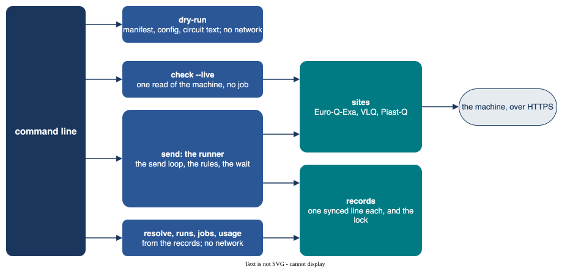
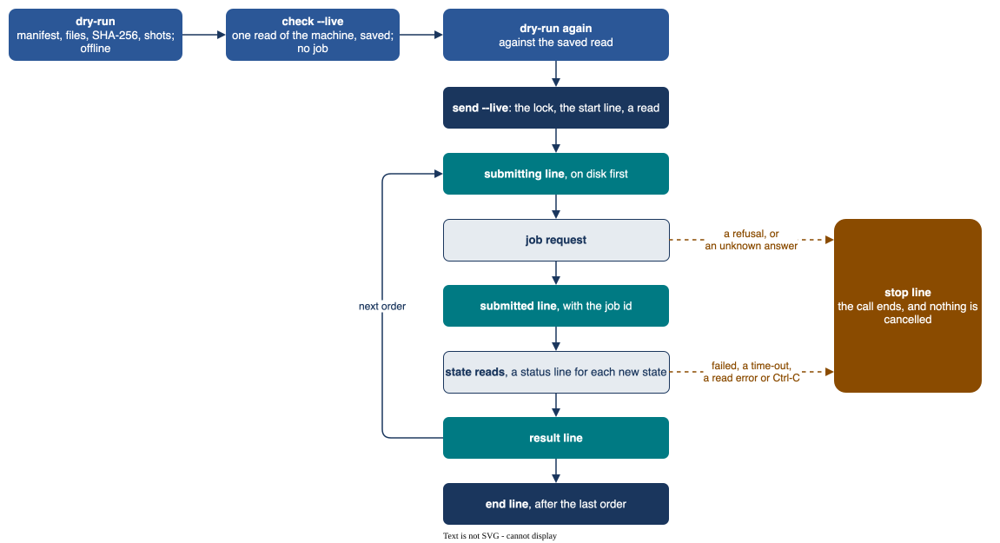
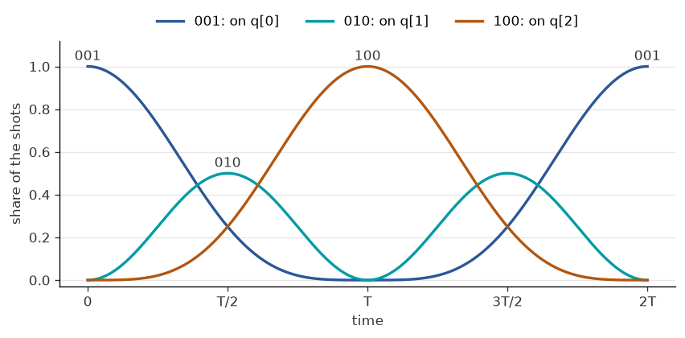
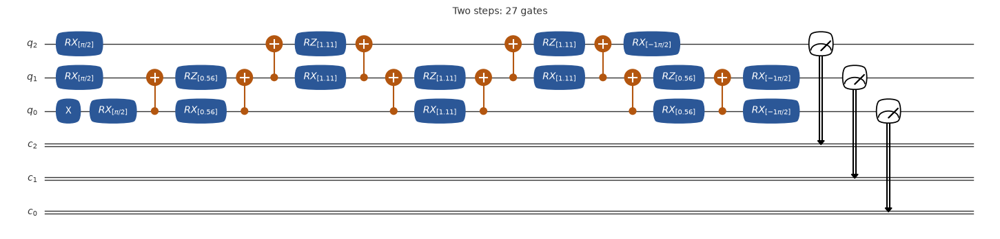
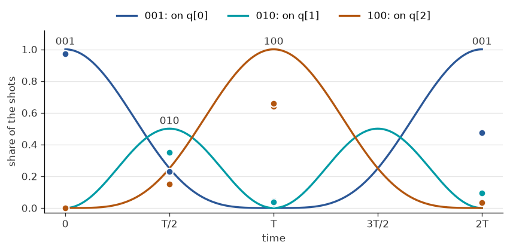
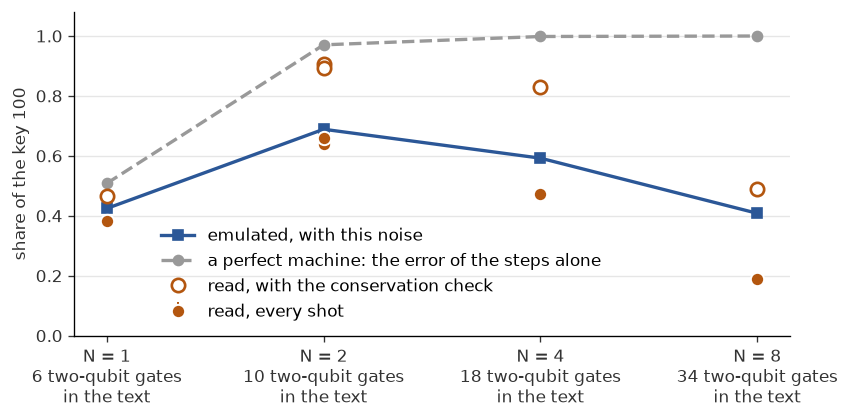
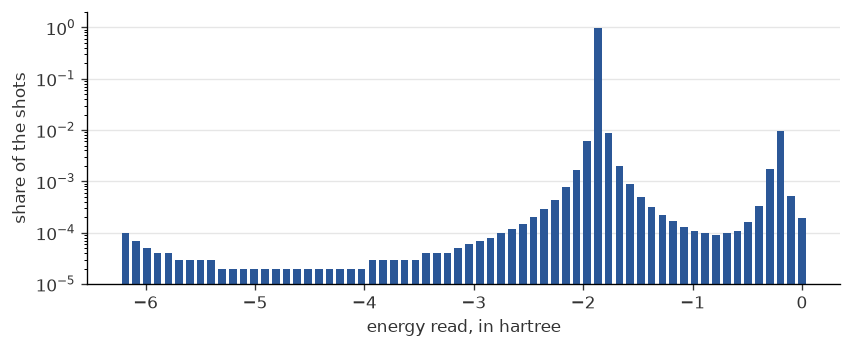
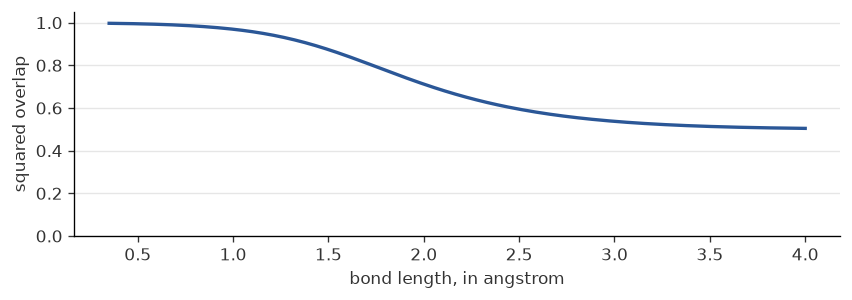
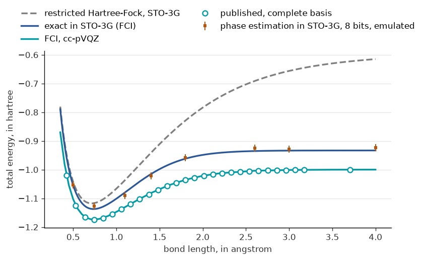

eurohpc-qdevices user manual¶
Use eurohpc-qdevices to send a fixed list of circuits to a EuroHPC quantum computer, one job at a time,
with an exact record of what was sent and what came back. It is for holders of a EuroHPC quantum award,
on a laptop or a login node:
Euro-Q-Exa at LRZ, through the Munich Quantum Portal;
VLQ at IT4Innovations, through LEXIS and HEAppE;
Piast-Q at PCSS, through the PCSS broker.
See also
To get onto the machines, follow the ENCCS lesson EuroHPC JU quantum devices and HPC-QC access in practice: applying, onboarding at each site, and a first job on each machine. This manual covers the app only.
Package eurohpc-qdevices, import name qdevices, command qdevices. Start with Install and first run, and
read Live runs before a live run.
Status. The app has run live on each of the three machines. The offline tests run against fake sites.
What it does, and what it does not¶
It reads a manifest, checks it offline, reads the state of a machine, sends the jobs in order with a record
synced to disk, collects jobs after a crash, records your decision on an order with qdevices resolve,
stops on rules, and shows runs, jobs and usage from the records.

It does not build, compile, emulate or change circuits: the text in the file is sent unchanged. It holds no rule of an experiment: give those in a Python file. It never cancels a job, never sends a lost submission again, and never stores or prints a token.
You need:
a EuroHPC quantum award, and an account at the site of the machine (the lesson shows how);
circuits in the form the site takes: OpenQASM for Euro-Q-Exa and VLQ, the broker’s operation list for Piast-Q;
the command line, and pixi or another Python package manager.
Install and first run¶
Install the app, then send one job. The app needs Python 3.11 or newer, with httpx and cryptography,
which come with it. It needs no client library of a site. A VLQ token still needs a LEXIS login (VLQ (IT4Innovations)).
Install¶
With pixi, in a folder next to your manifests. A PyPI package needs Python from conda-forge in the project first:
pixi init my-runs && cd my-runs
pixi add "python=3.12"
pixi add --pypi "eurohpc-qdevices @ git+https://github.com/ENCCS/eurohpc-qdevices"
pixi run qdevices --help
For a clone, give its absolute path with --editable:
pixi add --pypi --editable "eurohpc-qdevices @ file:///absolute/path/to/eurohpc-qdevices"
Once it is on PyPI, pip install eurohpc-qdevices in a virtual environment works too. Check the install
with pixi run qdevices --version. Below, qdevices means pixi run qdevices, or qdevices inside pixi shell.
Where the app keeps its files¶
No flag and no environment variable moves these folders. The home folder is read from the user database,
not from HOME.
Folder or file |
What it holds |
|---|---|
|
your projects and limits (Configuration) |
|
the records of the runs (The records) |
|
the decisions of |
|
the reads of the machines by |
|
the site locks, and the log of |
The app runs the same on a laptop and on a login node, but drive one site from one host (One live call per site, from one host).
First run¶
Read Live runs and the page of your site first. These steps send one job to Euro-Q-Exa with
examples/euroqexa-one-qubit. For VLQ and Piast-Q, change the site name and the token variable.
Copy
examples/qdevices.tomlto~/.config/qdevices/qdevices.toml. Put your project in place ofMY-PROJECTthere and in the manifest (Configuration, Manifests and records).Run the commands below.
FILEis a file of your own that holds the token (Tokens).With several jobs, look at the first, then go on with
qdevices send MANIFEST --live --resume RECORD --max-order N(Commands).
qdevices dry-run examples/euroqexa-one-qubit/manifest.json # offline, no token: "Dry run passed. Nothing was sent."
qdevices login euroqexa # how to get the token, and the variable to set
set +x; export MQSS_TOKEN="$(cat FILE)" # LEXIS_TOKEN for VLQ, PCSS_API_KEY for Piast-Q
qdevices check euroqexa --live --manifest examples/euroqexa-one-qubit/manifest.json # one read, stored; no job
qdevices dry-run examples/euroqexa-one-qubit/manifest.json # again: the qubits against the read, and its age
qdevices send examples/euroqexa-one-qubit/manifest.json --live --max-order 1 # the first job alone
qdevices runs # one line for each record: find the record here
qdevices jobs RECORD # one line for each order
qdevices usage # totals by site and project
With no_modify, the second dry run also checks the gate names and the coupled pairs (Euro-Q-Exa (LRZ)).
The send prints the path of the record, then each step. Step 1 edits these two files:
[euroqexa]
projects = ["MY-PROJECT"] # the projects a manifest may name
award_hours = 5 # your award on this machine, for `qdevices usage`
budget_seconds = 3000 # the most the app may use on the site, as its records count them
job_seconds_limit = 500 # the most one job may take; a lost or open order counts at this value
wait_seconds = 900 # the longest wait for one job; the job then stays open
{
"format": "qdevices/1",
"site": "euroqexa",
"machine": "EQE1",
"project": "MY-PROJECT",
"jobs": [
{"order": 1, "name": "X", "file": "X.qasm", "sha256": "c845c4d643aeccb8a0c3e8c8cc6e192eca8c9c5c869510d9e2087ebae713bbb2", "shots": 100}
]
}
Commands¶
Give qdevices COMMAND ...; SITE is euroqexa, vlq or piastq. The bare command prints the help
and sends nothing. qdevices --version prints the version, qdevices COMMAND --help the arguments.
Command |
Network |
|---|---|
|
None without |
|
None |
|
Live. |
|
None |
|
None |
|
None |
|
None |
|
None |
|
None |

check¶
Without --live it is offline. It says whether the token variable of the site is set (the token is never
printed), the minutes left on a LEXIS token (VLQ, from its expiry claim), and whether the time is inside
the Piast-Q window, if one is set. Exit code 0 if the token variable is set, 1 if not.
With --live it takes the site lock and makes one read of the machine, stored through the token filter
(Manifests and records). No job of any kind is made.
Site |
The read gives |
|
|---|---|---|
Euro-Q-Exa |
online or not, the qubits, gates, pending jobs and layout, and the line that pins the layout (The layout pin) |
names the machine; without it, a list of the machines of the site |
VLQ |
the status file of the site and the membership of the LEXIS project; for a member also the resource, its queues and templates, and the answer of HEAppE’s |
needed: it gives the LEXIS project and the resource |
Piast-Q |
the broker’s list of machines (Piast-Q (PCSS)) |
names the machine |
dry-run¶
No network call and no token. It prints the plan line by line, then checks:
What |
Against |
|---|---|
the form of the manifest, the SHA-256 of each file |
|
the form of each circuit |
the rules of its site, for example the native gates of VLQ or the angle ranges of Piast-Q |
the qubits |
the newest read of |
Euro-Q-Exa: the |
|
the shots |
the limit of the site and |
the project (for VLQ also the LEXIS project), and that |
the config |
the cost |
the published billing rule, where one exists (Billing and usage) |
A note does not fail the dry run. It ends with Dry run passed. Nothing was sent. (exit code 0) or lists
each problem as FAILED: ... (exit code 1).
send¶
qdevices send MANIFEST --live --max-order N # a new record: send the orders 1 to N
qdevices send MANIFEST --live --resume RECORD --max-order N # go on with a record, up to order N
qdevices send MANIFEST --live --resume RECORD # collect only: no new job
qdevices send MANIFEST --live --max-order N --new-run # a new record that sends the first orders again
qdevices send MANIFEST --live --max-order N --rules FILE # with the rules of an experiment
Without --live, or with neither --max-order nor --resume, nothing is sent (exit code 1). The token
is read once (Tokens), then the app takes the site lock. A call is refused before anything is sent:
When |
Do |
|---|---|
the manifest has a problem |
fix it; run the dry run |
a call that sends ( |
set them (Configuration) |
a call that sends cannot read a record of the site, an |
make it readable (Manifests and records) |
a new record, and any record of the site has an open or lost order |
collect the open one with |
a new record without |
resume that record, or give |
a resume that sends names a record that is not the newest of its run folder, was started on another host, or is a copy (its path, device or inode differ from its start line) |
resume the newest record, on its own host, at its own path |
a resume that sends gives another rules file than the one the record is held to, and no |
|
any resume, also one that collects only: the manifest or a circuit file has changed since the record was started |
collect the open orders with the old manifest. Send the rest in a new record, from a manifest of only those jobs, in a run of its own (a new folder or |
Each call reads the machine once, runs the rules on that read and checks every job against it (Rules);
a run sent in stages gets a new read at each call. Then each order goes as the figure above shows
(Live runs): a final order is never sent again, an open order is collected, and a lost order stops the
call. The call prints the path of the record, a line for each order and rule (pass or NOT MET, and
NOTE after a rule that gives a note), and at the end End: ... with the next command or STOP: ...
with the reason.
resolve and unlock¶
resolve writes your decision on one order, offline and under the site lock, in one synced line: in the
record, or, for a record of another runner, in older_decisions.jsonl of its site. The cases and options
are on Resolving an order, and a stale lock; any other case is refused. For example, --unreadable takes an open order whose
last stop is result_error, after two calls 10 minutes or more apart got an answer that could not be used,
or two calls 24 hours or more apart got that stop.
unlock is offline. It removes the holder file of the site lock left by host NAME, after you have
checked that no call runs there. It is refused if the holder names another host, or a live process on
this host. Each unlock is written to ~/.local/state/qdevices/unlock.jsonl.
runs, jobs and usage¶
They read records only: the records folder of the app, the older_records folders of the config, and any
record or folder given as PATH, also in the format of other runners (Manifests and records).
They read a record of another runner with the decisions of resolve on its orders. A record, folder,
PATH or file of decisions that cannot be read gives a line with its path and its error. usage leaves
such a record out of its totals; without its decisions, the orders show and count as the record has them.
usage says so on that line.
Command |
One line for each |
Columns |
|---|---|---|
|
record |
site, project, run and path; results against the jobs of the manifest; seconds measured; seconds counted after |
|
order |
order, name, job id, state (final, open with the last state read, |
|
site and project |
records, jobs, shots, seconds measured and counted, seconds by the published rule, init jobs and their node seconds; then the use against |
login¶
Prints how to get the token of the site and the variable to set. It reads no token.
Exit codes¶
Code |
Meaning |
|---|---|
0 |
a normal end |
1 |
refused by the app ( |
2 |
stopped by a rule (a refusal, a failed job and a job never submitted stop by default, through the rule |
3 |
an error of the program: read the record before the next step, as a job may be at the site |
130 |
an interrupt (Ctrl-C, SIGTERM, SIGHUP): nothing is cancelled, a resume collects the job |
Manifests and records¶
Write a manifest to say what to send. The app writes a record of what was sent and what came back. The app never changes a manifest, and you never change a record.
The manifest¶
One JSON file, next to the circuit files it names:
{"format": "qdevices/1", "site": "euroqexa", "machine": "EQE1", "project": "MY-PROJECT",
"jobs": [{"order": 1, "name": "X", "file": "X.qasm", "sha256": "...", "shots": 100,
"options": {"no_modify": false}}]}
Key |
What it holds |
|---|---|
|
|
|
|
|
the machine name at the site: |
|
your project; it must be listed in |
|
VLQ only, and needed there: the LEXIS project the device time is booked on, and the resource (VLQ (IT4Innovations)) |
|
the name of the run folder of the records; when absent, the name of the folder of the manifest |
|
optional, Euro-Q-Exa: the layout the texts were written for (The layout pin) |
|
the list of jobs, below |
any other key |
kept, and copied to the start line of the record (the example |
Key of a job |
What it holds |
|---|---|
|
the whole numbers 1 to N, in sequence, without gaps (not |
|
letters, digits, |
|
a file name next to the manifest (no folder part): one circuit, in the form the site takes |
|
the SHA-256 of the file, 64 lower-case hex digits |
|
a whole number of 1 to 1,000,000,000 |
|
optional: the options of the site. Euro-Q-Exa has |
any other key |
kept; a rules file sees it (Rules) |
Get the SHA-256 with shasum -a 256 X.qasm (macOS) or sha256sum X.qasm (Linux). The dry run prints the
SHA-256 it finds when it differs. The app checks the file again just before it is sent: a file that has
changed is not sent.
The layout pin¶
Run qdevices check euroqexa --live --manifest FILE. It prints the layout of the machine and the line that
pins it, "layout": {"layout_sha256": "...", "qubits": N, "pairs": M}: put that line in the manifest. The
dry run compares the pin with the saved read (with no read, only its form), and a live call with its own
read. Another layout fails the check, and nothing is sent (Euro-Q-Exa (LRZ)); qubits and pairs are then
printed. When the machine has changed, a text may act on other qubits: read it again, check the texts
against the new layout, then pin it. A record that has sent jobs cannot go on with a changed manifest
(send in Commands).
layout_sha256 is the SHA-256, in hex, of one UTF-8 text: qubits=N;pairs=, then each coupled pair once
as a-b, the lower index first, the pairs sorted and joined by commas. For 3 qubits coupled 0-1 and 1-2:
qubits=3;pairs=0-1,1-2.
The records¶
Each run has its records in ~/.local/share/qdevices/records/<site>/<run>/, one run_<UTC>.jsonl each.
<run> is the run key of the manifest, or the name of its folder. Each event is one JSON line, synced
to disk before the next request (Live runs).
A line that was cut (for example by a crash), or is not UTF-8, is passed over. A resume prints each cut
line as a NOTE, with the job id it holds, which may be cut too. The resume line keeps them in
cut_lines: line, text (the first 120 characters), job_id and job_id_may_be_cut.
Line |
Written |
|---|---|
|
once, at the start: the version, the host, the path, device and inode of the record, the manifest and its SHA-256, the SHA-256 of each file, the jobs, the extra keys of the manifest, the fixed addresses of the site, and the rules file (The rules file in the record) |
|
at the start of each later call, with the rules file (The rules file in the record) |
|
the read of the machine before the first job of a call, and |
|
each verdict of a rule, with its |
|
before the first request of a job |
|
each step of a VLQ job (created, uploaded) and of its init job, before the next request; the |
|
the job id, as soon as the answer is read |
|
each state read while waiting; a missed poll (Live runs) when the kind of failure changes, with |
|
the counts and the seconds; for VLQ also |
|
a job the site refused, a job that failed, a VLQ job never submitted |
|
your decision with |
|
the end of a call before every order is final, with the reason and its kind |
|
the normal end of a call |
The reads¶
qdevices check SITE --live stores each read in ~/.local/share/qdevices/reads/<site>/read_<UTC>.json,
through the token filter (Tokens). A read of Euro-Q-Exa also holds layout_sha256 and pairs
beside qubits; a read of VLQ holds status, from the status file of the site (VLQ (IT4Innovations)). The list of
machines of Euro-Q-Exa (a check without --manifest) is stored as list_<UTC>.json; the dry run does
not take it.
In records and reads, a number that is not finite is written as the text "NaN", "Infinity" or
"-Infinity", so each line and each read is standard JSON.
Records of other runners¶
Give the record or its folder to qdevices runs or qdevices usage, or list it in older_records of the
config (Configuration). Listed records also count in the budget and the open-order check of a send
to their own site. A record of another site in a listed folder is passed over. A record whose site cannot
be told counts for each site that lists it.
In the records folder of the app, the app reads only its own records (
run_<UTC>.jsonl).Below a folder of
older_recordsor aPATH, it reads the files namedrun*.jsonl, and every other.jsonlfile whose first line is a start line. Give any other record by its own path.One
.jsonlfile below the folder that cannot be read (no read permission, a broken link, or a first line longer than 1 MiB) makes the whole folder unreadable, even if it is not a record. A call that sends to its site is then refused (Commands).Each record counts once, by its real path. Two copies in two folders count twice: list each record once.
An
expiredline of another runner (the site does not know the job) makes an order with no result final. It then counts atjob_seconds_limit.
The app never writes a record of another runner. A decision of qdevices resolve on it (Resolving an order, and a stale lock)
goes to ~/.local/share/qdevices/records/<site>/older_decisions.jsonl, as a resolved line that names
the record by the SHA-256 of its first line and of the lines read (start_sha256, lines,
lines_sha256), the job id (decided_id) and its path. The app adds the line when it reads the record
while the order is as decided on, also for a copy that starts with the same lines. The file of decisions
is never read as a record.
Configuration¶
Put your projects and limits in ~/.config/qdevices/qdevices.toml; start from examples/qdevices.toml
(below). It has one table per site: [euroqexa], [vlq] and [piastq]. An unknown table or key is
refused, so that no secret goes there by mistake. No token goes in this file. Without the file no
project is allowed: a dry run reports it, and a send is refused.
Key, every site |
Type |
Default |
What it does |
|---|---|---|---|
|
list of texts |
none |
the projects a manifest may name; a send for another project is refused |
|
number |
none |
needed to send: the seconds the app may use on the site, summed over all records of the site and project (Billing and usage). 0 or more; 0 stops every send, and the other commands still work |
|
number |
300 |
above 0: the most time one job may take; the budget counts an order of unknown time at this value |
|
number |
900 |
the longest wait for one job; then the call ends, the job stays open, and a resume collects it. On VLQ a longer wait needs more time left on the token (the rule |
|
number |
none |
the hours of your award, shown by |
|
whole number |
none |
1 or more: your own limit on the shots of one job, below the limit of the site |
|
list of texts |
none |
folders or records of other runners under the same award; they count in the budget and the open-order check of a send to their site, and the app never writes them (Manifests and records) |
Site |
Key |
What it does |
|---|---|---|
VLQ |
|
the LEXIS projects the device time may be booked on; the |
Piast-Q |
|
the hours a job may be sent in, as |
Piast-Q |
|
the time zone of |
Piast-Q |
|
1 or more: replaces the limit of 200 shots a job that the app holds for Piast-Q; set it only on the site’s written word (Piast-Q (PCSS)) |
A lower value of max_shots, site_max_shots or job_seconds_limit would turn their rule off, so it is
refused. Euro-Q-Exa has no key of its own: the app holds its limit of 3,000,000 shots times gates a job
(LRZ), and no key changes it (Euro-Q-Exa (LRZ)).
Set
budget_secondswell below the award. A lost or open order counts atjob_seconds_limit, so a smalljob_seconds_limitleaves more of the budget usable.Set
job_seconds_limitabove the longest job you expect: a longer result stops the run (the rulejob_time).Set
wait_secondsto what you are willing to wait in one call.
# The example config. `./run.sh` in an example folder checks against it while the manifest says MY-PROJECT.
# For a live run, copy it to ~/.config/qdevices/qdevices.toml, where the app reads it, and put your own names in it.
# No token goes in this file: an unknown key is refused.
[euroqexa]
projects = ["MY-PROJECT"] # the projects a manifest may name
award_hours = 5 # your award on this machine, for `qdevices usage`
budget_seconds = 3000 # the most the app may use on the site, as its records count them
job_seconds_limit = 500 # the most one job may take; a lost or open order counts at this value
wait_seconds = 900 # the longest wait for one job; the job then stays open
[vlq]
projects = ["MY-PROJECT"]
lexis_projects = ["MY-LEXIS-PROJECT"]
award_hours = 5
budget_seconds = 600
job_seconds_limit = 300
wait_seconds = 900
[piastq]
projects = ["MY-PROJECT"]
award_hours = 5
budget_seconds = 3600
job_seconds_limit = 600
wait_seconds = 900
# window = ["Mon 09:00-12:00", "Wed-Thu 14:00-18:00"] # hours to send in, if you are given any
# window_zone = "Europe/Warsaw"
Rules¶
Give the rules of an experiment in a Python file, with qdevices send ... --rules FILE. A rule decides
whether a run goes on. The generic rules of the app always run too.
qdevices send examples/euroqexa-three-jobs/manifest.json --live --max-order 1 --rules examples/rules_bell.py
qdevices send examples/euroqexa-three-jobs/manifest.json --live --resume RECORD --max-order 3 --rules examples/rules_bell.py
Warning
A rules file runs with your rights and can read the rest of the environment. The token variable is already deleted when the file is imported. Give only a file you have read.
The functions¶
Function |
Called |
With |
|---|---|---|
|
once a call, before its first job |
the read of the machine |
|
before each job is sent |
the job, the state of the run |
|
after each result line is on disk |
the job, the result, the state |
|
after a refusal, a failed job, or a job never submitted |
the job, what happened |
Each gets plain dicts (no site object, no token) and answers with a verdict:
{"rule": "bell", "passed": True}
{"rule": "bell", "passed": False, "reason": "00 and 11 in 0.31 of the shots"}
{"rule": "pick", "passed": True, "skip": [4, 5]}
A verdict that does not pass stops the run, with exit code 2. Its reason is in the record.
skipnames orders not yet sent: they are never sent in that record. An order that was sent, or that does not exist, stops the run.A failed verdict: a function that raises, an answer that is not a verdict, a key that is not a text, or the key
self.Any other key is kept in the
ruleline, but not a key the line already has (event,utc,app,site,machine,project,point,order, and on VLQlexis_projectandresource). Anoteis also printed, as aNOTEline after the line of the rule.At
before_call,before_jobandafter_result, every generic rule and your rule must pass. Youron_refusalreplaces the generic one, so an experiment can let a refusal go on.
Argument |
What it holds |
|---|---|
|
the job of the manifest ( |
|
the result line, with |
|
|
|
|
Bit order. A rule that reads a bit by its position must do so per site. On Piast-Q, qubit 0 is the
leftmost character of each key of counts: element i of a shot is qubit i (release 1.15.0 of the maker’s
client library), and the app joins the shot in that order. On Euro-Q-Exa and VLQ the keys are as the
site gives them; LRZ publishes no bit order. On Euro-Q-Exa, as measured with this app and not published by
LRZ, a key reads q[n-1] … q[0], so q[0] is the rightmost character: a job with H on q[2] varied only the
leftmost. On VLQ a key reads c[n-1] … c[0], so c[0] is the rightmost character; the examples measure q[i]
into c[i]. IT4I’s guide gives no bit order. Jobs of six bits showed it, though not with this app: one that
flipped only the qubit read into c[0] gave 000001 in most shots. The app reads the counts from the same
result file of the site, in the same way. Qrisp’s label of a variable reads q[0] first, so reverse a key to
compare it with get_measurement (Circuits written in Qrisp).
The generic rules¶
Point |
Rule |
Passes when |
|---|---|---|
|
|
Euro-Q-Exa: the site gives the machine as online; Piast-Q: its name is in the broker’s list (Piast-Q (PCSS)); VLQ: the token is a member of the LEXIS project |
|
|
VLQ: no flag of the status file is |
|
|
the shots are within the limit of the site and |
|
|
Euro-Q-Exa: the shots times the gate operations of the text ( |
|
|
the seconds used so far plus |
|
|
VLQ only: the token has 30 minutes or more left, or twice |
|
|
Piast-Q only, when a window is set: the time is inside it |
|
|
the result has counts by bit string, and all the shots asked came back |
|
|
the job has a measured time, from 0 to |
|
|
never: a refusal, a failed job or a job never submitted stops the run |
The example file¶
examples/rules_bell.py stops the run if a Bell job gives the two even outcomes in less than half its
shots:
"""An example rules file: stop the run if a Bell job gives the two even outcomes in less than half its shots.
A rule gets plain dicts and answers with a verdict. A verdict that does not pass stops the run. Use it with:
qdevices send examples/euroqexa-three-jobs/manifest.json --live --max-order 3 --rules examples/rules_bell.py
"""
def after_result(job: dict, result: dict, state: dict) -> dict:
"""The verdict on one result: a Bell job passes when 00 and 11 hold at least half of its shots."""
if not job["name"].startswith("BELL"):
return {"rule": "bell", "passed": True}
counts = result["counts"]
even = counts.get("00", 0) + counts.get("11", 0)
share = even / job["shots"]
return {"rule": "bell", "passed": share >= 0.5, "share": share,
"reason": f"00 and 11 in {share:.2f} of the shots, below 0.5"}
The rules file in the record¶
The record is held to the rules file of its first call. Its start line holds rules_file: the path and
SHA-256 of that file, or null with no --rules. The SHA-256 covers that file alone, not the modules it
imports. The app reads the file once and runs the bytes it hashes.
Call |
Rules file |
|---|---|
a resume that sends ( |
must be the one the record is held to, or it is refused before anything is sent: give that file with |
a resume with |
changes it on purpose: the resume line holds the new file in |
a resume that collects only |
never refused for its rules file |
the commands the app prints ( |
give |
qdevices send MANIFEST --live --resume RECORD --max-order N --rules FILE --new-rules
Each resume line holds rules_file, new_rules (true with --new-rules) and rules_note, the note the
app printed about the rules file, if any. A record of an older version of the app has no rules_file. It
is held to the rules file of its first resume that sends or gives --new-rules; that resume is not refused,
and its line holds a note and no rules_before. A resume that collects only before then sets nothing, and
its line and the commands it prints hold its rules file, with a note.
Live runs¶
Read this page before a live run. It says how a job is never sent twice, never cancelled, and always in a record.
The record¶
Each event is one JSON line, written, flushed and synced to disk (fsync, and F_FULLFSYNC on macOS)
before the next request (The records). A “submitting” line is on disk before the first request of a
job. Each step of a VLQ job (created, uploaded) is on disk before the next request. The job id is on disk
as soon as the answer is read.
Order |
In the record |
What the app does |
|---|---|---|
lost |
a “submitting” line, no job id: the request may have reached the site |
never sends it again; blocks a new run until you resolve it (below) |
open |
a job id, no result |
a resume collects it and never sends it again; blocks a new run on its site until then |
Never edit or move a record. The budget and the open-order check read every record where it is. A copy
in another place sends nothing: a resume that sends takes only the newest record of its run folder, from
the host, path, device and inode in its start line. Read a record with qdevices jobs RECORD or any JSON tool.
A resume never submits a VLQ job that has no “submitted” line. It reads the state of the job:
State at the site |
In the record |
Result |
|---|---|---|
past Configuring |
any |
collected |
cannot be read |
any |
the order stays open; exit code 1 |
Configuring |
the “created” line, no “uploaded” line |
SubmitJob was never sent: a final “not submitted” line, no device time |
Configuring |
the “uploaded” line (written just before SubmitJob), or no “created” line |
SubmitJob may have reached the site: the order stays open, nothing is cancelled or sent again; a stop |
The answer to a job request¶
For VLQ, a job request is any request of the metered job. Each site page says which answer is a refusal.
Answer |
Result |
|---|---|
a refusal: no job ran |
the order is final, with a “refused” line; the rule |
any other answer that is not a success: a redirect, 500 or more, a 4xx that is not a refusal at that site, no answer, no job id |
a job may exist: a stop |
a failure of the VLQ init job |
a stop |
No transport retry. A request that makes a job is never sent twice: a network loss inside it leaves a lost order.
In the wait, a failed read of the state or result (no answer, 500 or more, or the Piast-Q answer of too many connections) is a missed poll, asked again at the next poll until
wait_seconds. When the wait ends with no good answer, or an answer ends it at once, the call stops (status_errororresult_error). Its stop line holdsmissed: the kind of the last missed poll, ornullwhen an answer ended the wait at once. The order stays open, and a resume collects it later. A result that still cannot be read is made final withqdevices resolve RECORD ORDER --unreadable: after two calls 10 minutes or more apart when the answer could not be used, else after two calls 24 hours or more apart (Resolving an order, and a stale lock).The wait for a VLQ init job ends at the first failed read (a stop
prepare). The order stays unsent. A resume with--max-ordermakes a new init job.A line
RECORD WRITE FAILED (...): order N (NAME), job ID: ...orUnder way at the stop: ...gives the id of the job or init job under way. That id may not be in the record: write it down. Whenqdevices jobs RECORDshows the order as lost, give it withqdevices resolve RECORD ORDER --job ID.
Nothing is cancelled¶
The app has no cancel call. If you must, cancel a job at the site with its own tools. Then, if the record shows the order as lost, record what became of it with
qdevices resolve(below).Ctrl-C, SIGTERM, SIGHUP and a wait time-out end the call with a “stop” line. The job runs on at the site. Collect it with
qdevices send MANIFEST --live --resume RECORD. After an interrupt the call prints that command andUnder way at the stop: order N (NAME), job ID.An error of the program (exit code 3) prints that line too.A signal set to ignore stays ignored, so
nohupworks. The screen never ends a live call: a closed pipe or terminal is passed over.Keep the machine awake (
caffeinate -ion macOS). A sleep inside a request leaves a lost order.
One live call per site, from one host¶
send, check --live, resolve and unlock take the site lock, ~/.local/state/qdevices/<site>.lock.
A second live call on the site from this host is refused while the first runs: wait for it to end.
sendtakes the lock before it reads any record.resolvereads the record to learn its site (for a record of another runner, the site whoseolder_recordsread it), takes the lock, reads it again and decides under the lock.The lock is an exclusive
flockand a holder file<site>.holder(host name, pid, start time), as a cluster file system can grant aflockon each node with no error. A holder of another host refuses the call: check that host, then giveqdevices unlock SITE --host NAME. A holder of this host whose process has ended is cleared. With noflockor no holder file, the call is refused: use a host whose home folder hasflock.Drive one site from one host. A laptop and a login node have different home folders and do not see each other’s lock or records. A resume that sends is refused on another host than the one that started the record. A resume without
--max-orderstill collects there.The lock covers this app only: no other tool may send to the site during a live call. Records of another runner count in the budget and the open-order check only when listed in
older_records(Configuration).Keep the clock of the host synchronised (NTP). The records, job times and time rules read it.
Resolving an order, and a stale lock¶
qdevices resolve RECORD ORDER OPTION records your decision on one order, offline, in one synced line.
Find the order with qdevices jobs RECORD. In a record of this app it takes these cases, and refuses any
other:
Order |
Give |
When |
Then |
|---|---|---|---|
lost |
|
you found the job in the job list of the site (Piast-Q has none: ask PCSS, Piast-Q (PCSS)) |
a resume collects it |
lost |
|
the job list shows no job |
final, with no job |
open VLQ, last stop |
|
the site shows that the job never ran |
final, with no job |
open or lost, with a job id that no URL can hold (a newline in it) |
|
no read of its state can name the job |
with |
open, shown only as |
|
every status line with a state says |
counts at |
open, last stop |
|
two calls 10 minutes or more apart got that answer |
final, counts at |
open, last stop |
|
two calls 10 minutes or more apart got an answer that could not be used, or two calls 24 hours or more apart got that stop (below) |
final, counts at |
final, the result has more seconds than |
|
the time is a wait at the site, cause not known, not the run of the job |
counts at |

For --unreadable, an answer that could not be used is a result_error stop with missed null and no
http_status of 300 or more. Any other result_error stop got no usable answer: missed polls up to
wait_seconds, a redirect or an HTTP error of 400 or more, or a stop line of qdevices before 0.2.0, which
has no missed. The stop says how far apart the two calls must be, and names the command. A record with an
--unreadable decision needs qdevices 0.2.0 or later; an older app reads the order as open and refuses new
sends of that site.
The app never sends a resolved order again, and never cancels the job at the site. For an open order that
resolve does not take, ask the site (each site page gives its support), and resume once the job is final.
A record of another runner is never written. That is a record whose first start line this app did not write, and which is not in the records folder of the app.
resolvetakes it only when its first line is a start line (settle any other with its runner), and the app reads it for its own site: list it, or its folder, inolder_recordsof that site, or of one site only when its site cannot be told (Configuration). Else the decision has no effect.The decision goes to
older_decisions.jsonlof that site, in one synced line under its lock (Manifests and records). It holds only while the order is as it was decided on: a job id, new job or result that the other runner writes later stands. A send reads only the decisions of its own site.It takes
--nonefor a lost order (final, with no job),--gonefor an open order whose job the site no longer gives (final, counts atjob_seconds_limit), and--over-limitas above.It refuses
--job,--expiredand--unreadable: the app does not collect such a record, so collect it with its runner.--goneon a record of this app is refused: there,--expiredtakes such an order.
Tokens¶
The token is read once from one environment variable (
MQSS_TOKEN,LEXIS_TOKEN,PCSS_API_KEY). The variable is then deleted from the process environment, before a rules file is imported (Rules).The app reads no token file, and never stores or prints a token.
Never type the token on the command line. Use
set +x; export NAME="$(cat FILE)": then it is not in your shell history or a trace.The token goes only to the fixed addresses of the site, with no redirect. No flag and no environment variable moves them.
A filter cleans every record line, error, downloaded log and traceback. It takes out the token and the VLQ envelope passwords of the call (each password raw and in base64), each whole, in JSON form and by every start and every end of 8 characters or more; any text in the form of a JWT; the value of
USER_JWT_PWD(the envelope password in the environment of a VLQ job) in any form; and Fernet text and its base64 form.
Budget and rules¶
The generic rules check the shots, the budget and more before each job, and the result after it
(Rules). The budget counts a lost or open order at job_seconds_limit, so the sum is an upper bound
(Billing and usage).
Examples¶
Each folder of examples/ explains itself, with a README that says what it does and how to run it, and a block
diagram. Anyone can emulate them, with no account and no token: ./emulate.sh in a folder, or
all the examples on Binder.
Hamiltonian simulation on a quantum computer, step by step is a full tutorial.
To send one, ./run.sh in its folder checks it offline, with no network call and no token. Put your own project in
the manifest and in ~/.config/qdevices/qdevices.toml in place of the placeholders, then run ./submit.sh
(Install and first run). examples/ also holds an example config (qdevices.toml) and rules file (rules_bell.py,
Rules).
Folder |
Site |
What it sends |
What a perfect machine would give |
|---|---|---|---|
|
Euro-Q-Exa |
an X gate on one qubit, 100 shots |
|
|
Euro-Q-Exa |
a Bell pair (H, CX), 100 shots |
|
|
Euro-Q-Exa |
the two above, and the Bell job again: send the first order alone, look at it, then go on |
as above |
|
VLQ |
a PRX rotation by pi on one qubit, 100 shots |
|
|
VLQ |
a Bell pair in native gates, through the resonator |
|
|
Piast-Q |
an R rotation by pi, 100 shots |
|
|
Piast-Q |
one RXX gate at its largest angle, 100 shots |
|
A real machine has noise, so the counts spread.
VLQ does not compile: the indices of a VLQ text must match the table of the day (VLQ (IT4Innovations)).
In the release gate, the circuits of
vlq-one-qubit,piastq-one-qubit,euroqexa-bellandpiastq-bell(at 400 shots, then at 200) were sent with this app. The one-qubit jobs came back the same day; Euro-Q-Exa (LRZ) and Piast-Q (PCSS) say what became of the Bell jobs.euroqexa-one-qubit,euroqexa-three-jobsandvlq-bellhave not run on hardware with this app.examples/qrisp/has 16 programs for Euro-Q-Exa, written with Qrisp (Circuits written in Qrisp).
Starter examples from the sites’ own material¶
These four take their circuit from a manual or tutorial of the site or of the machine’s maker, written
again in the form the app sends. Each manifest names its source in the key source, which the record
copies to its start line. None of them has run on hardware with this app.
Folder |
What it sends |
What a perfect machine would give |
Source, and its licence |
|---|---|---|---|
|
a GHZ state on three qubits (H, CX, CX), 100 shots |
|
LRZ training material of the pilot phase, |
|
prepare |
|
MQSS adapter example |
|
a GHZ state on five qubits in native gates, through the resonator, 1000 shots |
|
the circuit of the IT4I notebook GHZ_example.ipynb (the site says all rights reserved: only the circuit is taken); the star form of the maker’s IQM Academy notebook |
|
the three native operations: RZ, R and RXX on two qubits, 100 shots |
all four outcomes, about a quarter each |
the default example of |
What was changed from each source:
Euro-Q-Exa: both texts are OpenQASM 2, the form the app sends, and the site compiles them, as the sources expect (Euro-Q-Exa (LRZ)). The GHZ source is OpenQASM 3 with 1000 shots. The inverse-unitary source builds its gates in a loop; here they are written out.
VLQ: the CX gates of the IT4I circuit are in native form. The first qubit moves into the resonator, each other qubit takes
r(pi/2, -pi/2),czwith the resonator andr(pi/2, pi/2), and the first qubit moves back. The source runs 5000 shots; 1000 shots cost the same 0.9 s floor by the published rule.Piast-Q: the operation list of the API example as it is. The source asks for 5 shots.
Circuits written in Qrisp¶
Write the circuit with Qrisp as an OpenQASM 2 file, make a manifest, and go on as with any other example. Qrisp only makes the files; the app does not need it. These examples have run on Euro-Q-Exa with this app; the table below says which answers stayed readable. The dry run checks the file offline; it does not run the site’s compiler.
Site |
Takes an OpenQASM 2 text from Qrisp? |
Why |
|---|---|---|
Euro-Q-Exa |
Yes, without |
The site compiles an OpenQASM 2 text for the machine (Euro-Q-Exa (LRZ)) |
VLQ |
No: the dry run says “not an OpenQASM 3 text”, “not native on VLQ” |
It takes OpenQASM 3 in its native gates ( |
Piast-Q |
No: the dry run says “not an operation list of the broker” |
It takes the broker’s operation list ( |
Do not set no_modify for these texts. They use h, cx, rz and rx, and with no_modify the site compiles
nothing, so every gate must be one the machine lists. The dry run checks the gates against a saved read
and refuses any other.
The examples¶
examples/qrisp/ has a folder for each program, each with its own README, emulate.sh, run.sh and submit.sh, the script that wrote them, and send_all.sh for several at once. Each
manifest has two keys of its own, made_with and ideal, which the app copies to the start line of the
record. Some are small checks; eight follow pages of the Qrisp documentation (pages.py), each with its angles fixed. The ideal
answers are in Qrisp’s labels.
The table in examples/qrisp/ lists
them, with what stayed readable. bell and ghz3 take 100 shots, the others 1000. One run each, on one day: it shows how
much of each answer survived that day, not how good the machine is. The site’s compile can merge gates, so the size
of a text is not always the cost of a job: ising2 read the same at 5 steps and at 16, and both ran with 2 CZ.
To emulate any of them with no account: ./emulate.sh in its folder, or the page
all_examples.ipynb on Binder.
Hamiltonian simulation on a quantum computer, step by step is the tutorial on trotterization.
On Euro-Q-Exa a key of counts reads q[n-1] … q[0], while Qrisp’s label of a variable reads q[0] first:
reverse a key to compare it with get_measurement (Rules).
examples/qrisp/ising/run.sh # one example: a dry run, offline, no token
examples/qrisp/send_all.sh # inside pixi shell, with your config: a dry run of each
pixi run --manifest-path examples/qrisp/pixi.toml qrisp-examples --project YOURS --out my-runs
my-runs/ising/run.sh --live # your own copy of one example: one read, then one job
examples/qrisp/send_all.sh --live --dir my-runs # all, smallest first, one job each
examples/qrisp/send_all.sh --live --dir my-runs qft3 qubo # only these
With --live the script needs MQSS_TOKEN, reads the machine once (qdevices check euroqexa --live), then
runs qdevices send MANIFEST --live --max-order 1 for each and stops at the first failure, with the command
to go on. It refuses a manifest that still says MY-PROJECT.
Your own program¶
In a clone of the repository, the pixi workspace in examples/qrisp/ adds the latest Qrisp to the
app; the default environment does not have it. Outside pixi, pip install qrisp in the environment of the
app works too. Qrisp needs Python 3.11 to 3.13 and installs packages of its own.
pixi run --manifest-path examples/qrisp/pixi.toml qrisp-examples # writes examples/qrisp/*/ again
pixi run --manifest-path examples/qrisp/pixi.toml qrisp-examples --project YOURS --shots 200 --out my-runs
Add a function that returns a Qrisp variable to
examples/qrisp/programs.py, a line toPROGRAMS, and a note toexamples/qrisp/notes.py, which its README takes.Run the script again. It writes one folder for each program, with the text and a manifest of one job for Euro-Q-Exa, with its SHA-256.
Make the rest of the folder. The script does not write the stored results,
emulate_qutip.py,emulate_qrisp.pyor the pictures: a new folder has none of them, and a changed one still shows the old circuit. From the top of the clone, run the tasksqutip-emulated,qrisp-emulated,qutip-scripts,qrisp-scriptsandpicturesof that workspace, in this order, each with the folder inexamples/qrisp/. After a change gives the commands.To collect several programs in one run, copy their job lines into one manifest, with the orders 1 to N (Manifests and records).
How the text is written¶
examples/qrisp/qasm2.py reads Qrisp’s own circuit data and writes one line per instruction. It does not
use Qrisp’s text export (to_qasm2, qasm, to_qasm3 of QuantumCircuit), as in Qrisp 0.9.10 that export
hands the circuit to a package of another framework.
qc = qv.qs.compile() # the circuit of the session of the variable qv
qc.measure(qc.qubits) # every qubit into its own classical bit, in order
qc = qc.transpile() # break composite gates (QFT, swap, cp) down
text = to_qasm2(qc) # examples/qrisp/qasm2.py
The text has one register q of all qubits and one register c of all classical bits, and only gates of
the original qelib1.inc. It is not optimised and no layout is chosen: the site does that. Any other gate,
or an angle that is still a symbol, stops the writer with its name, and nothing is written.
Qrisp |
OpenQASM 2 |
|---|---|
|
the same name |
|
|
|
the same name, with the angles in radians |
|
|
|
|
|
the same statement |
|
left out: a global phase, and Qrisp’s marks of allocation |
Sources: the Qrisp documentation https://qrisp.eu and the source of Qrisp 0.9.10 on PyPI; the gate list
of the original qelib1.inc, https://github.com/openqasm/openqasm/blob/OpenQASM2.x/examples/qelib1.inc.
Hamiltonian simulation on a quantum computer, step by step¶

We take one small Hamiltonian, compute exactly what it does, write the same evolution as a quantum circuit, run that circuit on the quantum computer Euro-Q-Exa, and compare the counts with the exact answer.
To try it yourself: Run > Run All Cells emulates it on this page.
Hamiltonian simulation is what the quantum computer does: it applies the evolution of a physical system to its qubits.
Emulation is what this page does: a classical computer computes what the quantum computer would do with the same circuit.
Applying \(e^{-iHt}\) to a state is the central step of quantum simulation. Studies of how spins and electrons move use it directly. Energy calculations for atoms and molecules use it inside phase estimation. The questions in this small example come back at every scale: how to split \(H\), how many steps to take, what the machine’s errors do, and how to check the answer.

1. The task: apply \(e^{-iHt}\)¶
The Schrödinger equation, with \(\hbar = 1\), is
For a Hamiltonian that does not depend on time, the solution is
In the eigenbasis of \(H\), with \(H|E_k\rangle = E_k|E_k\rangle\), each component only gains a phase:
The dynamics come from differences of energies. And the energies are written in phases.
For \(n\) qubits, \(H\) is a matrix of size \(2^n \times 2^n\). A gate-based quantum computer such as Euro-Q-Exa does not apply such a matrix directly: it offers one-qubit and two-qubit gates. The task is possible when \(H\) is a sum of terms that each act on few orbitals or spins, \(H = \sum_j H_j\), as the Hamiltonians here are, because the exponential of each term is a short circuit. So we build \(e^{-iHt}\) from those short circuits (Lloyd).
2. The model, and its exact answer¶
Three qubits in a line, with
Call a qubit in \(|1\rangle\) an excitation. One term moves an excitation to the neighbouring qubit, and gives zero on \(|00\rangle\) and \(|11\rangle\):
So the number of excitations never changes. With one excitation the state lives in three dimensions, and there \(H\) is
Expand the start in the eigenvectors \((1,\sqrt2,1)/2\), \((1,-\sqrt2,1)/2\) and \((1,0,-1)/\sqrt2\), with \(E=\sqrt2,-\sqrt2,0\). The start \((1,0,0)\), the excitation on q[0], has components \(\tfrac12,\tfrac12,\tfrac1{\sqrt2}\). Each gains its phase, as in Section 1. Adding them gives the amplitudes \(\cos^2\frac{t}{\sqrt2}\), \(-\frac{i}{\sqrt2}\sin(\sqrt2t)\), \(-\sin^2\frac{t}{\sqrt2}\) on q[0], q[1], q[2].
The share of each outcome is the square of its amplitude. A key reads q[2] q[1] q[0], as the machine returns it:
At \(T=\pi/\sqrt2\) the phases \(e^{\mp i\sqrt2T}\) are both \(-1\), so the state is \(-|100\rangle\): the excitation is on q[2] in full. At \(2T\) it is back on q[0]. Chains of equal couplings do this exactly only at two and three qubits (Christandl et al.). Below, the same numbers come from three routes: the closed form, a matrix exponential, and QuTiP’s solver of the Schrödinger equation.
from chain import T, closed_form
from matrices import H
from tables import routes
print(f"T = {T:.4f}; the eigenvalues of H: {np.round(np.linalg.eigvalsh(H), 4)}")
print(routes())
if importlib.util.find_spec("qutip"):
%run exact.py
else:
print("QuTiP is not installed here, so its check is left out.")
T = 2.2214; the eigenvalues of H: [-1.4142 -1.4142 -0. -0. 0. 0. 1.4142 1.4142]
t closed form 001, 010, 100 matrix exponential
0 1.000 0.000 0.000 1.000 0.000 0.000
T/2 0.250 0.500 0.250 0.250 0.500 0.250
T 0.000 0.000 1.000 0.000 0.000 1.000
2T 1.000 0.000 0.000 1.000 0.000 0.000
t sesolve 001, 010, 100 closed form
0 1.0000 0.0000 0.0000 1.0000 0.0000 0.0000
T/4 0.7286 0.2500 0.0214 0.7286 0.2500 0.0214
T/2 0.2500 0.5000 0.2500 0.2500 0.5000 0.2500
3T/4 0.0214 0.2500 0.7286 0.0214 0.2500 0.7286
T 0.0000 0.0000 1.0000 0.0000 0.0000 1.0000
2T 1.0000 0.0000 0.0000 1.0000 0.0000 0.0000
largest difference: 1.1e-11
from figures import curves
curves();

3. Split the exponential: product formulas¶
Write \(H = A + B\), with \(A\) on q[0], q[1] and \(B\) on q[1], q[2]. Each part is easy: a short circuit (Section 4). But they do not commute, \([A,B]\neq 0\), so \(e^{-i(A+B)t} \neq e^{-iBt}e^{-iAt}\).
For a short time \(dt=t/N\) the difference is small, and that is the idea of a product formula. \(N\) steps of
order 1: \(U_1(dt) = e^{-iB\,dt}\,e^{-iA\,dt}\), with an error of order \(dt^2\) a step;
order 2: \(U_2(dt) = e^{-iA\,dt/2}\,e^{-iB\,dt}\,e^{-iA\,dt/2}\), with an error of order \(dt^3\) a step.
These are also called Trotter steps. Expanding gives \(U_1(dt)=e^{-iH\,dt}+\tfrac12[A,B]\,dt^2+O(dt^3)\), so the commutator sets the first error; the symmetric form of order 2 cancels it. A product acts from the right, so in \(U_1\) \(A\) acts first.
Over \(N\) steps the errors add at most, so the total falls as \(1/N\) at order 1 and as \(1/N^2\) at order 2 (Suzuki). Its size is bounded by the commutators of the terms: pairs at order 1, nested commutators at higher orders. Terms that commute add nothing, so the number of terms alone does not set it (Childs et al.). The bound is for the worst state; a given state can do better.
The table gives the largest error on any state, \(\lVert V - e^{-iHT}\rVert\), the share of the arrival key, and the two-qubit gates each circuit needs.
from tables import formulas
print(formulas())
N | error, order 1, order 2 | share of 100, order 1, order 2 | two-qubit gates, order 1, order 2
1 | 1.6534 0.8074 | 0.4009 0.5083 | 4 6
2 | 0.8074 0.1829 | 0.7591 0.9704 | 8 10
4 | 0.3957 0.0441 | 0.9310 0.9983 | 16 18
8 | 0.1967 0.0109 | 0.9817 0.9999 | 32 34
16 | 0.0982 0.0027 | 0.9953 1.0000 | 64 66
Doubling \(N\) halves the error of order 1 and cuts that of order 2 by four. On paper, more steps are always better. But the two-qubit gates grow with \(N\), and each of them adds an error on a real machine. Section 6 shows which of the two wins.
4. One bond as gates¶
We need \(e^{-i\frac{\theta}{2}(XX+YY)}\). Here \(R_x(\theta)=e^{-i\theta X/2}\), \(R_z(\theta)=e^{-i\theta Z/2}\), and CX flips its second qubit when its first is 1. With \(A=\tfrac12(XX+YY)\) the bond is \(e^{-iA\theta}\), so \(\theta\) is the time of that step: \(dt\) or \(dt/2\). \(XX\) and \(YY\) commute, so no further split is needed. Two identities do the rest.
A CX moves a Pauli operator from one qubit to two: \(\mathrm{CX}(X\otimes I)\mathrm{CX} = X\otimes X\) and \(\mathrm{CX}(I\otimes Z)\mathrm{CX} = Z\otimes Z\). So
cx a,b; rx(θ) a; rz(θ) b; cx a,bis \(e^{-i\frac{\theta}{2}(XX+ZZ)}\).A rotation changes the basis: \(R_x(-\tfrac{\pi}{2})\, Z\, R_x(\tfrac{\pi}{2}) = Y\), and \(X\) stays \(X\). So with \(R_x(\pi/2)\) on both qubits before and \(R_x(-\pi/2)\) after, \(ZZ\) becomes \(YY\).
That is 2 CX for a bond. Neighbouring \(R_x(\pi/2)\) and \(R_x(-\pi/2)\) cancel, so a whole job needs them only at its two ends. The figure shows the job, one bond, and the general recipe for any Pauli term. The cell checks the bond against the matrix exponential.
Image("figs/circuit.png", width=900)

from scipy.linalg import expm
from matrices import bond, pauli
theta = 0.7
wanted = expm(-0.5j * theta * (pauli("XX") + pauli("YY")))
print("largest difference from the exponential:", float(np.abs(bond(theta) - wanted).max()))
largest difference from the exponential: 1.1902799230898936e-16
5. The whole circuit, in two forms¶
Written bond by bond. chain.py writes the text the machine gets: OpenQASM 2, a gate-level text that the site compiles. Here is the main job, MAIN: order 2, \(N=2\), \(t=T\).
from chain import Steps
from circuit import Circuit
from emulate import fractions, top
text = Steps(T, 2).text()
circuit = Circuit.of_text(text)
print(text)
print(circuit.size)
print("A perfect machine:", top(circuit.shares()))
OPENQASM 2.0;
include "qelib1.inc";
qreg q[3];
creg c[3];
x q[0];
rx(1.5707963267948966) q[0];
rx(1.5707963267948966) q[1];
rx(1.5707963267948966) q[2];
cx q[0],q[1];
rx(0.5553603672697958) q[0];
rz(0.5553603672697958) q[1];
cx q[0],q[1];
cx q[1],q[2];
rx(1.1107207345395915) q[1];
rz(1.1107207345395915) q[2];
cx q[1],q[2];
cx q[0],q[1];
rx(1.1107207345395915) q[0];
rz(1.1107207345395915) q[1];
cx q[0],q[1];
cx q[1],q[2];
rx(1.1107207345395915) q[1];
rz(1.1107207345395915) q[2];
cx q[1],q[2];
cx q[0],q[1];
rx(0.5553603672697958) q[0];
rz(0.5553603672697958) q[1];
cx q[0],q[1];
rx(-1.5707963267948966) q[0];
rx(-1.5707963267948966) q[1];
rx(-1.5707963267948966) q[2];
measure q[0] -> c[0];
measure q[1] -> c[1];
measure q[2] -> c[2];
qubits read 3, gates 27, two-qubit gates 10
A perfect machine: 100: 0.970 001: 0.027 010: 0.003
The same text as a picture, drawn by code: qutip-qip, the quantum information processing package of QuTiP, draws the gates as the text has them, so the gates and their order are those that are sent. One-qubit gates are blue, two-qubit gates orange; each rotation shows its angle, and the meters on the right are the three measurements. The figure of Section 4 groups the same gates into bonds.
if importlib.util.find_spec("qutip_qip"):
from circuit import Circuit
from pictures import circuit_figure
steps = Circuit.of_text(text)
circuit_figure(steps, most=len(steps.ops), title="Two steps");
else:
print("qutip-qip is not installed here, so this drawing is left out: pip install qutip-qip")

In one line of Qrisp. Qrisp’s trotterization builds the same evolution from the operator (with_qrisp.py):
ham = 0.5 * sum(X(k) * X(k + 1) + Y(k) * Y(k + 1) for k in range(2))
ham.trotterization(order=2, method="commuting")(qv, t=T, steps=2)
With method="commuting" it turns \(XX\) and \(YY\) together to diagonal form, with one CZ on each side and 2 CX in the diagonal part: 4 two-qubit gates a bond, 20 in this job. The default method writes the two gadgets of the figure, also 4 on one bond, but at order 2 not all its halves merge: 26 in this job, for the same operator. The operator is the same, so the shares are the same. Where Qrisp is installed the cell also emulates its circuit; in every case it then reads the text that was sent.
if importlib.util.find_spec("qrisp"):
from with_qrisp import chain_by_qrisp, measured
print("Qrisp's own emulator; its labels read q[0] first:", top(measured(chain_by_qrisp(T, 2))))
circuit = Circuit.of_text(Path("state_transfer/QRISP.qasm").read_text())
print(circuit.size)
print("A perfect machine:", top(circuit.shares()))
Qrisp's own emulator; its labels read q[0] first: 001: 0.970 100: 0.027 010: 0.003
qubits read 3, gates 59, two-qubit gates 20
A perfect machine: 100: 0.970 001: 0.027 010: 0.003
6. What came back from the machine¶
The eleven jobs went to Euro-Q-Exa in one run on one evening, through the app qdevices, each with 1000 shots (CONTROL with 100). It shows how much of each answer survived that evening, not how good the machine is. The site compiles each text to the machine’s own gates, r and cz, and places it on its qubits. The record does not hold the compiled circuit, so what follows about the compile is read on the job pages of the portal.
A shot is one run of the circuit, ended by one measurement of every qubit; its key is the bits that come back. Readable, as set before the run: the ideal top key is the top of the counts and at least twice the next wrong key.
state_transfer/results.json holds the counts. After a run of your own, compare.py --live writes live.json, and this page reads it in place of the same jobs (the README says how). To read a run sent by someone else, such as the speaker of a talk, put its link in COUNTS.
from reading import Run
COUNTS = "live.json" if Path("live.json").exists() else "state_transfer/results.json" # or a link: https://...
run = Run.of("state_transfer", COUNTS)
print("The counts come from", COUNTS)
print(run.table())
The counts come from state_transfer/results.json
job t N 2q key perfect read kept checked
CONTROL 0 0 0 001 1.000 0.970 0.970 1.000
MAIN T 2 10 100 0.970 0.641 0.706 0.908
QRISP T 2 20 100 0.970 0.696 0.769 0.905
REPEAT T 2 10 100 0.970 0.661 0.741 0.892
HALF T/2 2 10 010 0.480 0.351 0.728 0.482
BACK 2T 4 18 001 0.988 0.476 0.604 0.788
ZERO T 2 10 000 1.000 0.642 0.642 1.000
STEPS1 T 1 6 100 0.508 0.381 0.820 0.465
STEPS4 T 4 18 100 0.998 0.474 0.572 0.829
STEPS8 T 8 34 100 1.000 0.190 0.388 0.490
ORDER1 T 2 8 100 0.759 0.638 0.805 0.793
Read the table from the top. perfect is what a perfect machine gives for that text. read is the share of all shots. kept and checked come from the conservation check below.
CONTROL has no evolution: only the X gate and the readout. It reads 001, so q[0] is the right-hand character of a key. A reversed reading would look like no transfer at all.
MAIN is the job of Section 5, and the result this tutorial is built on. The excitation arrives: 100 is the top key by far. The perfect share is 0.970, so most of the loss is the machine’s, not the formula’s.
REPEAT is the same text as MAIN, sent again about 12 seconds later. One number from one job says little until you know how far a second job of the same circuit lands from it, so a repeat is the first check of any measurement. The two differ by 0.020. Shot noise alone, at 1000 shots each, gives a difference of about 0.021, so they agree as far as 1000 shots can show. One pair, 12 seconds apart, says nothing about how the machine drifts over minutes, hours or days. \(N = 1, 4\) and \(8\) ran about three minutes after \(N = 2\), and no repeat spans that gap.
The conservation check. Every step keeps one excitation, so a key with another number of 1s is a machine error, never an error of the formula. kept is the share of shots that pass, and checked is the answer among those. The check removes one readout flip in every case. It cannot remove an error that keeps the number of excitations, such as a wrong angle on a whole bond, so it is shown beside the raw reading, never in its place. The same check is used in chemistry, where the number of electrons is conserved (Section 10).
ZERO is the MAIN text without the X gate. With no excitation \(H|000\rangle = 0\), so a perfect machine gives 000 at any \(t\) and any \(N\), with no error of the formula at all. Here the answer is known exactly, so its reading shows what the compiled gates and the readout cost. It reads well below CONTROL, so gates did run, and the circuit that ran has all 10 CZ. Only 000 has no 1s, so here checked is 1 by construction.
QRISP has twice the two-qubit gates of MAIN in its text, and reads no lower (0.696 against 0.641 and 0.661). A text is a request, not what runs: the job page on the portal shows the circuit that ran, under Executed Circuit. For QRISP it has 10 CZ, as for MAIN: the site’s compile merged the four two-qubit gates of each bond into two. The two-spin example ising2 shows this more sharply: at 5 and at 16 Trotter steps it read the same, and both jobs ran with 2 CZ, as all their steps are one two-qubit block.
HALF and BACK follow the excitation in time. At \(T/2\) the middle key leads, and at \(2T\) the start key leads again. BACK evolves forward only, so no gate meets its own inverse. A compile could still shorten it: its product is close to the identity on all eight states, as the exact evolution at \(2T\) is the identity, and it equals three bonds with small angles. It reads close to STEPS4, with the same 18 two-qubit gates in its text (0.476 against 0.474, where shot noise alone gives about 0.022; kept 0.604 against 0.572). It keeps far fewer shots than STEPS1, with 6 (0.604 against 0.820), and its executed circuit has all 18 CZ: it was not cut to three bonds.
curves(run.over_time());

At each time the key that should lead leads, but it reads below its curve, by what the machine loses. After the gates, a key that should be empty reads above zero. The shot error of a point, at most 0.017, is smaller than its dot.
The number of steps. Now the same time \(T\) with \(N = 1, 2, 4, 8\).
from figures import sweep
sweep(run.over_steps());

This is the main result. At \(N=1\) the formula itself is wrong: a perfect machine gives only 0.508. At \(N=2\) the formula is nearly right and the circuit is still short, and the reading is the highest of the four. At \(N=4\) and \(N=8\) the formula is close to perfect, but the reading falls. Each step adds gates, which fits the fall; one run cannot separate this from other causes. The best number of steps is set by both errors together. An experiment on two transmons, on the transverse-field Ising model, shows the same kind of maximum at a finite number of steps (Salathé et al.). On the same XX model, Smith et al. state the trade-off, measure the loss with each added step, and use the same conservation check.
That fall also tells us something about the compile. This model is free fermions (Section 8). For three sites every product of its bonds equals three bonds with suitable angles, at any \(N\): 6 CX in all (Kökcü et al.). The compile did not find that form: each STEPS job ran every two-qubit gate of its text (34 CZ for STEPS8), and the reading falls with \(N\).
Order 1 against order 2. ORDER1 has 2 fewer two-qubit gates than MAIN, and a perfect share of 0.759 against 0.970. Raw, the two read about the same (0.638 against 0.641 and 0.661). Two fewer gates do not explain this: the simple model of Section 7, set to match MAIN, puts ORDER1 about 0.1 below it. One pair of jobs cannot say why. With the conservation check the gain of order 2 shows: 0.908 and 0.892 against 0.793. The check is not a bound: ORDER1 then reads above its perfect 0.759, by about two standard errors. Key 100 read 0.84 of its perfect share and key 010 only 0.58. The simple model of Section 7 does not do this, and one job cannot say why.
What may be said from this. What these compiled jobs returned, on that evening, and which gates ran. Not what one gate costs: for that one needs many runs.
7. Emulate it yourself¶
Now try the same jobs with no machine at all. tools/emulate.py runs a text on a state vector, in Python alone. Its noise is a simple model for learning: after each two-qubit gate, one of the 15 two-qubit Pauli errors with chance noise, and at the end each bit reads wrong with chance readout. It is not a model of Euro-Q-Exa. Change the numbers below.
# Try it: choose a time, a number of steps, and how noisy the machine is. Nothing is sent.
t, steps, order = T / 2, 3, 2
noise, readout = 0.03, 0.03
circuit = Circuit.of_text(Steps(t, steps, order).text())
print(circuit.size)
print("The exact shares: ", top(closed_form(t)))
print("A perfect machine:", top(circuit.shares()))
print("With this noise: ", top(fractions(circuit.sample(2000, noise, readout))))
qubits read 3, gates 35, two-qubit gates 14
The exact shares: 010: 0.500 001: 0.250 100: 0.250
A perfect machine: 010: 0.491 001: 0.261 100: 0.248
With this noise: 010: 0.361 001: 0.198 100: 0.168 000: 0.086 011: 0.077 110: 0.043 and 2 more
Where Qrisp is installed, Sections 5 and 8 run its emulator. Section 9 shows a stored run of it, unless you set RUN_THE_GATES = True. Here it stands beside ours, beside a third emulator, QuTiP, and beside the machine, on the key of each job. QuTiP runs the same text gate by gate through its package qutip-qip, on a state vector with no noise. The cell runs each of the two if it can, and otherwise reads its stored shares: state_transfer/qrisp_emulated.json and state_transfer/qutip_emulated.json.
from emulate import qrisp_stored, qutip_stored
folder = Path("state_transfer")
shares = {"Qrisp": qrisp_stored(folder), "QuTiP": qutip_stored(folder)}
if importlib.util.find_spec("qrisp"):
from qrisp_emulator import folder_shares as by_qrisp
shares["Qrisp"] = by_qrisp(folder)
if importlib.util.find_spec("qutip_qip"):
from qutip_emulator import folder_shares as by_qutip
shares["QuTiP"] = by_qutip(folder)[0]
print(run.beside(shares))
job key ours Qrisp QuTiP machine
CONTROL 001 1.000000 1.000000 1.000000 0.970
MAIN 100 0.970409 0.970410 0.970409 0.641
QRISP 100 0.970409 0.970410 0.970409 0.696
REPEAT 100 0.970409 0.970410 0.970409 0.661
HALF 010 0.480430 0.480430 0.480430 0.351
BACK 001 0.987890 0.987890 0.987890 0.476
ZERO 000 1.000000 1.000000 1.000000 0.642
STEPS1 100 0.508307 0.508310 0.508307 0.381
STEPS4 100 0.998267 0.998270 0.998267 0.474
STEPS8 100 0.999894 0.999900 0.999894 0.190
ORDER1 100 0.759056 0.759052 0.759056 0.638
Ours and Qrisp’s agree to about five places: the largest difference in any key is about 0.000006 in these eleven jobs, in STEPS8, and about 0.000009 in all 43 jobs of the examples, in qrisp/ising. Qrisp’s emulator rounds its shares to 5 or 6 places and scales them to sum to 1, and those two steps give the whole difference, to the 8 places stored. Ours and QuTiP agree to the 8 places stored: the largest difference in all 43 jobs is 0.000000005, in qrisp/qubo, which is that rounding, and before it 0.0000000000000014. So QuTiP and Qrisp differ by as much as ours and Qrisp’s do. All three read the text through the same parser, so the comparison checks the gates and the state vector, not how a text is read. Neither the emulator Qrisp runs by default nor QuTiP as it runs here has a model of noise, so the noise in this section is ours alone. The stored files were made on an Apple Silicon Mac; on another kind of computer a live run of Qrisp may differ from its file by about 0.00001.
# The rise and fall, emulated: the share of 100 at T, for each number of steps, at three levels of noise.
from tables import arrival, rise_and_fall
print(rise_and_fall())
N 2q perfect noise 0.01 noise 0.03 noise 0.06
1 6 0.508 0.444 0.424 0.385
2 10 0.970 0.818 0.689 0.545
3 14 0.994 0.796 0.653 0.467
4 18 0.998 0.789 0.592 0.392
6 26 1.000 0.726 0.485 0.302
8 34 1.000 0.671 0.408 0.236
12 50 1.000 0.615 0.299 0.171
The table holds readout at 0.03, and each number is a sample, good to about 0.02. More noise lowers every row, and the long circuits lose the most, so the rise and fall of Section 6 appears here with no machine. Now put the emulator beside the machine.
# Can you match the machine? The chart of Section 6, with the emulator on it. Change the two numbers and run this cell again.
noise, readout = 0.03, 0.03
rows = run.over_steps()
sweep(rows, [arrival(n, noise, readout) for n, *_ in rows]);

No one pair of numbers fits all four points. \(N = 1, 2\) and \(4\) alone fit to about 0.02, but with all four, \(N = 8\) reads about 0.07 low, about five shot errors: from \(N = 4\) to \(N = 8\) the machine kept 0.40 of its share, and no pair keeps less than 0.55. That rests on one job, so it cannot say why. So one number per gate does not describe this run. Every folder of the examples can be emulated in the same way: ./emulate.sh --noise 0.03 --readout 0.03, or the page all_examples.ipynb, also on Binder.
On your own laptop, with no account: git clone https://github.com/ENCCS/eurohpc-qdevices, cd eurohpc-qdevices/examples/hamiltonian, then ./open.sh opens this page (it needs pixi), or cd state_transfer && ./emulate.sh runs all eleven jobs with Python alone.
To run a job on the machine you need an account of your own: a token acts fully as its owner, so it is never handed to someone else. From this page you cannot send a job, and that is on purpose. The ENCCS lesson says how to get an account, and the README in live/ says how to send the job of a talk.
8. From three qubits to atoms and molecules¶
The path carries over; the shortcuts do not. Electrons in an atom or a molecule, with the nuclei held fixed and a finite set of spin orbitals, are described by
where \(a_p^\dagger\) puts an electron in spin orbital \(p\). The numbers \(h\) and \(g\), with \(g_{pqrs}=\langle pq|sr\rangle\), are integrals that a classical code computes.
With one electron, or many with no second sum, the problem stays free-fermion: an \(M\times M\) matrix, which a classical computer diagonalises in time polynomial in \(M\). That is why the chain has a closed form and fits 6 CX. The second sum couples the electrons. An exact classical solution then works in a space of size \(\binom{M}{n}\), for \(n\) electrons in \(M\) spin orbitals: about \(10^{29}\) for 50 in 100. \(M\) qubits hold that space, which is why the method is studied. Classical methods treat many molecules well. A broad study of ground-state energies found no evidence so far of an exponential quantum gain across chemical space, and calls a relevant system with strong evidence an open question. It did not study other tasks and does not rule out smaller gains (S. Lee et al.).
Step 1, to qubits. Let qubit \(p\) read 1 when spin orbital \(p\) is full. The Jordan-Wigner transformation writes \(a_p = \left(\prod_{k<p} Z_k\right)\tfrac12(X_p + iY_p)\). Electrons anticommute, \(a_pa_q=-a_qa_p\). Operators on different qubits commute, so the \(Z\) string supplies the sign: it counts, modulo 2, the electrons in the orbitals below \(p\). So a term can reach across many qubits. For neighbouring orbitals the \(Z\)s cancel:
That is the bond of this tutorial. The chain above is one electron hopping along three orbitals in a line. Its \(3\times3\) matrix is the Hückel matrix of the three π orbitals of the allyl radical, in units of \(\beta\), with \(\alpha\) set to zero. The radical has three π electrons; here we follow one, and with no second sum each moves on its own. Between orbitals that are not neighbours, the \(Z\)s stay. The cell checks both.
from matrices import JordanWigner
two, three = JordanWigner(2), JordanWigner(3)
print("hop(0, 1) = (XX + YY)/2 on two orbitals:", np.allclose(two.hop(0, 1), 0.5 * (pauli("XX") + pauli("YY"))))
print("hop(0, 1) + hop(1, 2) = H of this tutorial:", np.allclose(three.hop(0, 1) + three.hop(1, 2), H))
print("hop(0, 2) = (XZX + YZY)/2, a Z stays between:", np.allclose(three.hop(0, 2), 0.5 * (pauli("XZX") + pauli("YZY"))))
hop(0, 1) = (XX + YY)/2 on two orbitals: True
hop(0, 1) + hop(1, 2) = H of this tutorial: True
hop(0, 2) = (XZX + YZY)/2, a Z stays between: True
Step 2, the terms. The second sum of \(H\) adds terms such as \(Z_pZ_q\) and \(X_pX_qY_rY_s\). Their number grows as the fourth power of the number of spin orbitals. Each is one Pauli term, so each uses the general recipe of the figure, and they are split by the same product formulas, with the same trade-off of Section 6.
Step 3, what we get from it.
Dynamics: evolve a prepared state and measure, as here: how charge moves, or how a system answers a sudden change.
Energies: phase estimation runs a controlled \(e^{-iHt}\) and reads the phase \(e^{-iEt}\) of Section 1 into a register, which gives the energy \(E\) (Abrams and Lloyd; Aspuru-Guzik et al.). An error in \(e^{-iHt}\) becomes an error in \(E\). It returns \(E_k\) with probability \(|c_k|^2\), the \(c_k\) of Section 1. So the state prepared first must overlap the state wanted; for a large molecule that is a problem of its own.
Other algorithms use it as a part: linear systems, thermal states, adiabatic state preparation. Card P06 of the Quantum Algorithmic Primitives Atlas lists them. The Quantum Algorithm Zoo (Jordan) has an entry on this routine, which lists Qrisp among its implementations.
Here is the hydrogen molecule, emulated, with the two-qubit Hamiltonian of Qrisp’s ground-state page: the same trotterization, inside phase estimation. Its numbers match H2 in the minimal basis STO-3G at 0.735 Å: 4 spin orbitals, which its symmetries reduce to 2 qubits. Energies are in hartree, for the electrons alone. The repulsion of the nuclei adds 0.720, so the total is -1.137.
The code is in with_qrisp.py, and its centre is one line:
return QPE(qv, ham.trotterization(), precision=bits, kwargs={"steps": STEPS}, iter_spec=True)
Here ham is h2(), the numbers of the page, and STEPS is 3. Its start, x(qv[0]), is the restricted Hartree-Fock state, with energy -1.837 and squared overlap 0.988 with the ground state. At \(t=1\) the register holds \(\varphi\) with \(e^{-iE}=e^{2\pi i\varphi}\), so \(E=-2\pi\varphi\), for \(E\) between \(-2\pi\) and 0. The code uses the first-order formula with 3 steps per unit time: at \(t=1\), 3 steps shift \(E\) by 0.0005 hartree and 1 step by 0.0044. With no Qrisp the cell prints what a run gave.
from figures import phases
from hydrogen import MADE
if importlib.util.find_spec("qrisp"):
from with_qrisp import hydrogen
estimates = hydrogen()
else:
print("Qrisp is not installed here: this is what a run gave.")
estimates = MADE
print(estimates.table())
phases(estimates.energies);
The exact energy: -1.857 hartree
bits qubits two-qubit gates top phase energy
3 5 261 0.2500 -1.571
4 6 558 0.3125 -1.963
5 7 1142 0.2812 -1.767
6 8 2307 0.2969 -1.865

The chart is the last row, at 6 bits. The high bar is the grid point nearest the ground level, -1.857: the grid has steps of 0.098. The low bar near -0.2 is the upper level, -0.225, with a squared overlap of 0.012 with the start. So the chart shows both the grid and the \(|c_k|^2\) above.
Each bit adds one binary digit to the phase, and about doubles the circuit, as bit \(k\) runs \(e^{-iH2^k}\). With 6 bits the grid of \(E\) has steps of \(2\pi/64=0.098\) hartree. The usual target, called chemical accuracy, is about 0.0016 hartree, 1 kcal/mol, for energy differences. A grid with steps of that size takes 12 bits, about 150,000 two-qubit gates in this form, with no compression. In the run above the answer was clear at 18 two-qubit gates in the text (474 against 108) and no longer readable at 34 (190 against 175, where the rule asks for twice). That gap is what this small example measures.
9. The whole curve of H2¶
So far the molecule has one bond length. Now we hold the nuclei fixed at many bond lengths, and compute the energy at each. The result, energy against bond length, is the potential energy curve, the picture chemists recognise for a bond. Its minimum gives the equilibrium length of the bond. The depth of its well is close to the energy it takes to break the bond, but larger by the zero-point vibration of the nuclei, which fixed nuclei leave out: about 6 kcal/mol for H2 (from the constants of the NIST WebBook). Its far end must reach the energy of two separate atoms, and not every method gets there.
The phase estimation below is emulated: a laptop computes what a perfect quantum computer would do, and nothing is sent to a machine. Its circuits are far longer than anything the machine of Section 6 read: 9248 two-qubit gates at each bond length in this form, against at most 34 in the texts sent there. A laptop also solves this molecule directly, and much faster, so nothing on this page gains over a classical computer.
What exact means for each method. Each one works on the same equation: the Schrödinger equation of the electrons, with the nuclei held fixed (the Born-Oppenheimer approximation) and no relativity. They differ in the method and in the basis. A basis is the finite set of functions, centred on the nuclei, from which the orbitals are built. STO-3G is a minimal basis: one function on each atom, a fixed sum of 3 Gaussians. cc-pVQZ, the largest here, has 30 on each atom.
Restricted Hartree-Fock puts both electrons in one orbital. It is the start of our phase estimation. In any basis it is an approximation.
Full configuration interaction (FCI) solves the Schrödinger equation exactly within a basis: in the words of Szabo and Ostlund (p. 234), “exact within the subspace spanned by the one-electron basis”. So each basis has its own FCI energy. In STO-3G, for the ground state, FCI comes down to a \(2\times2\) matrix, which
molecule.pybuilds with NumPy alone.exact_chemistry.pyuses PySCF for the larger bases, and this page reads its stored numbers.Phase estimation in STO-3G reads the levels of the same \(2\times2\) matrix, on a grid of energies and through a product formula. With a finer grid and more steps it closes on FCI in STO-3G, and on nothing better. A single reading can fall below FCI: that is the grid, not a better result.
The published values (Pachucki) solve the same equation with no limit from a basis, as they are extrapolated to a complete set. To every digit we print they are exact for this equation, not for the real molecule, and they are computed, not measured. Here they are the benchmark. Sims and Hagstrom agree with them to better than \(4\times10^{-12}\) hartree at every length both list, from 0.21 to 3.18 Å.
Molecule(length).terms gives the five coefficients of the two-qubit Hamiltonian at any bond length. At 0.735 Å they are the numbers on Qrisp’s page, to every digit it prints, and the cell prints how close. The run is the same trotterization inside phase estimation as in Section 8, at 8 bits, with 3 steps per unit time, at eight bond lengths. Only the angles change with the length, so the count of gates is the same at each. The next cell shows a stored run of those gates, so Run All stays light; a fresh run on a laptop gave the same numbers. Set RUN_THE_GATES = True to run them yourself. On a laptop that took from half a minute to about three minutes, and about 1.5 GB of memory. The checks behind this section are in curve_checks.md.
from hydrogen import Curve
from molecule import difference_from_page
RUN_THE_GATES = False # True needs Qrisp, and about 1.5 GB of memory
print(f"Largest difference from the numbers of Qrisp's page: {max(map(abs, difference_from_page())):.1e}")
if RUN_THE_GATES:
from with_qrisp import curve
emulated = curve()
else:
emulated = Curve.stored()
print(emulated.table())
Largest difference from the numbers of Qrisp's page: 4.8e-09
8 bits, 3 steps per unit time: 10 qubits, 9248 two-qubit gates, grid step 0.025 hartree
length exact overlap reading share top share
0.5 -1.0552 0.995 -1.052 0.970 -1.052 0.970
0.7414 -1.1373 0.987 -1.127 0.568 -1.127 0.568
1.1 -1.0792 0.958 -1.090 0.480 -1.090 0.480
1.4 -1.0155 0.901 -1.021 0.749 -1.021 0.749
1.8 -0.9618 0.777 -0.958 0.712 -0.958 0.712
2.6 -0.9352 0.579 -0.925 0.336 -0.361 0.363
3.0 -0.9336 0.537 -0.928 0.453 -0.928 0.453
4.0 -0.9332 0.504 -0.923 0.280 -0.285 0.409
length is in Å, and all energies are total energies in hartree: the electrons and the repulsion of the nuclei, unlike the chart of Section 8. exact is FCI in STO-3G, and overlap is the squared overlap of the start with the ground state. top is the grid point with the most shots, and reading is the one that the rule below picks. Each share is that of the energy on its left.
Which peak to read. The start reaches two levels, and phase estimation returns each with its \(|c_k|^2\). At 0.735 Å the overlap is 0.988, so the top reading is the ground level. As the bond stretches the overlap falls, to 0.504 at 4 Å. The start keeps both electrons in one orbital, and half of that state has both of them on one atom (the ionic terms of Szabo and Ostlund, p. 167). The ground state of two atoms far apart does not have that. So the two levels hold comparable shares, and which one is on top depends on how near each lies to a grid point.
So we read the lowest strong peak: the grid point with the lowest energy among those that hold at least 0.1 of the shots and no less than either neighbour. From 5 bits up this rule read the ground level at every length we tried, up to 15 Å. It uses what we know of this molecule, its overlap. For a large molecule the overlap is not known in advance.
from figures import overlaps
from tables import readings
overlaps();
print(readings())
At 2.6 angstrom: exact energy -0.935, squared overlap 0.579.
bits top reading lowest strong peak
6 -0.975 -0.975
7 -0.925 -0.925
8 -0.361 -0.925
9 -0.938 -0.938
10 -0.355 -0.938

The chart shows the fall of the overlap. The table comes from the closed form of the shares of phase estimation (in curve_checks.md), with no gates and no product formula. At 2.6 Å, the length of the table, the top reading at 8 and at 10 bits is -0.361 and -0.355: that is the upper level, at -0.3558, and not the ground level, at -0.935. At 6, 7 and 9 bits it is the ground level, so more bits do not cure this. The lowest strong peak stays near the ground level at each number of bits. In the emulated curve above, the top reading is the wrong level at 2.6 Å and at 4 Å.
from figures import dissociation
dissociation(emulated);

Reading the chart. Each orange point has a bar of half a grid step either way.
The grey line, restricted Hartree-Fock in STO-3G, has a well but no proper far end. At 4 Å it reads -0.6149, where two atoms in this basis have -0.9332, so it lies 0.3183 too high, and it goes on rising, to 0.3873 too high at infinite distance. Szabo and Ostlund give the cause (p. 167): “since both electrons occupy the same spatial orbital, there remains even at infinity some electron-electron repulsion.”
The blue line, exact in STO-3G, does reach the energy of two atoms in this basis. The orange points follow it: the largest gap is 0.0105. They fall on either side of the line, so a point below it is the grid, not a better result.
The teal line, FCI in the largest basis here, runs through the published points. The blue line lies above the published values at all 24 stored lengths, as the variational principle requires: by 0.0370 at its closest, at 0.7 Å, and by 0.0819 at 0.35 Å. In the words of Szabo and Ostlund (p. 241): “although full CI is exact in the STO-3G basis, it gives a potential curve which does not agree very well with the exact one.”
A deeper well is not a better result here. The minimum of the blue curve, at 0.7349 Å against the published 0.7414 Å, lies 0.2041 below its two atoms. The well of the published curve is 0.1745 deep. So the well of STO-3G is deeper than the published one, although its energy lies above the published one at every stored length. The reason is the atom: in this basis it has -0.4666, where the exact value is -0.5 (Szabo and Ostlund, p. 161). Two atoms miss 0.0668, and the molecule at its minimum misses only 0.0372. Szabo and Ostlund (p. 241) say the well depths are greater “because the STO-3G basis is so poor for the hydrogen atom”.
from reference import methods
from tables import well
print(methods(emulated))
print()
print(well())
at 0.7414 angstrom at 3.0 angstrom
method hartree above kcal/mol hartree above kcal/mol
restricted Hartree-Fock, STO-3G -1.1167 +0.0578 +36.3 -0.6560 +0.3453 +216.7
exact in STO-3G: FCI -1.1373 +0.0372 +23.3 -0.9336 +0.0677 +42.5
phase estimation in STO-3G, 8 bits -1.1270 +0.0475 +29.8 -0.9281 +0.0733 +46.0
restricted Hartree-Fock, cc-pVQZ -1.1335 +0.0410 +25.7 -0.8333 +0.1680 +105.4
FCI, cc-pVQZ -1.1738 +0.0007 +0.4 -1.0011 +0.0003 +0.2
published, by interpolation -1.1745 -1.0014
length energy depth
exact in STO-3G 0.7349 -1.1373 0.2041
published 0.7414 -1.1745 0.1745
STO-3G is too deep by 0.0297 hartree, 18.6 kcal/mol
In the first table, above is the energy less the published value at that length, also given in kcal/mol. In the second, length and energy are those of the minimum, and depth is how far it lies below two atoms.
The first table separates two limits: the method and the basis. A large basis does not repair the method: restricted Hartree-Fock in cc-pVQZ lies 0.0410 above at 0.7414 Å and 0.1680 above at 3 Å. An exact method does not repair the basis: FCI in STO-3G lies 0.0372 and 0.0677 above. Only both together come close: FCI in cc-pVQZ lies 0.0007 and 0.0003 above. Phase estimation in STO-3G reads the same level as FCI in STO-3G, so it has the limit of the basis, and the error of its grid as well.
Exact in a small basis is far from the published energy. The next two tables test that. The first uses the closed form with the 3 steps, and no gates, at 0.7414 Å. The second reads the stored numbers.
from reference import bases
from tables import more_bits
print(more_bits())
print()
print(bases())
bits grid step reading above exact in STO-3G above published
6 0.09817 -1.15157 -0.01430 +0.02291
8 0.02454 -1.12702 +0.01025 +0.04745
10 0.00614 -1.13929 -0.00202 +0.03518
12 0.00153 -1.13623 +0.00104 +0.03825
14 0.00038 -1.13661 +0.00066 +0.03787
16 0.00010 -1.13680 +0.00047 +0.03767
FCI above the published value
at 0.7414 angstrom largest on the curve
basis M C(M, 2) hartree kcal/mol hartree kcal/mol
STO-3G 4 6 0.03721 23.35 0.08188 51.38
6-31G 8 28 0.02279 14.30 0.03545 22.25
cc-pVDZ 20 190 0.01106 6.94 0.04933 30.95
cc-pVTZ 56 1540 0.00214 1.34 0.00671 4.21
cc-pVQZ 120 7140 0.00068 0.43 0.00137 0.86
With more bits the reading closes on the exact energy in STO-3G, not on the published one. At 16 bits it lies 0.00047 above the exact energy in STO-3G, which is the shift of the 3 steps, and 0.03767 above the published one. More steps would shrink the 0.00047. No number of bits or steps touches the 0.03721 that FCI in STO-3G lies above the published value: here that takes a larger basis.
A larger basis has a price. M is the number of spin orbitals, which is the number of qubits before any symmetry: from 4 to 120 here. Of these five bases, only cc-pVQZ lies within 1 kcal/mol of the published values: 0.43 kcal/mol above at 0.7414 Å, and 0.86 above at its worst, at 0.35 Å. cc-pVTZ, with 56 spin orbitals, lies 1.34 above at 0.7414 Å. A larger basis is also not always lower: from 6-31G to cc-pVDZ the FCI energy rises at short bonds, by 0.0139 at 0.35 Å. Neither set contains the other, so the variational principle does not order them.
These are errors of total energies. Chemical accuracy usually refers to energy differences against experiment, within 1 kcal/mol (Motta and Rice). Agreement with FCI in a fixed basis is another thing, which Motta and Rice call algorithmic accuracy. Phase estimation in STO-3G could reach that and still lie about 23 kcal/mol from the published energy at 0.7414 Å.
For a classical computer these two electrons stay easy. C(M, 2) is the \(\binom{M}{n}\) of Section 8 for two electrons, at most 7140 here, before symmetry makes it smaller: in STO-3G the 6 states become the \(2\times2\) matrix. PySCF solved all five bases at all 24 bond lengths on one laptop in one to five minutes. This molecule is a place to check the method against known numbers.
Experiments have traced the curve of this molecule in a minimal basis. Lanyon et al. worked in STO-3G, with 2 photonic qubits and 20 bits of iterative phase estimation, which reads one bit at a time on one control qubit. A problem this small let them set each power of the evolution directly, “by re-encoding the same number of gates”. They do not expect that for larger molecules. They also encode “exact eigenstates, obtained via a preliminary calculation on a classical computer”. O’Malley et al. worked in STO-6G, with 2 superconducting qubits for a variational method and 3 for Trotterised iterative phase estimation. They write: “we are able to implement only a single Trotter step, which is not enough to achieve chemical accuracy.” Their chemical accuracy is measured against the exact energy in that basis, which is the algorithmic accuracy above. So the limit of the basis applies to both.
10. What changes with size¶
The chain of Sections 2 to 7 |
A large molecule, at useful accuracy |
|
|---|---|---|
Qubits |
3 |
one per spin orbital, less a few by symmetry |
The terms |
4 Pauli terms |
of order \(M^4\) for \(M\) spin orbitals |
Gates of one term |
2 CX a bond |
up to \(2(M-1)\) CX: its \(Z\) string sets the ladder |
The start |
one excitation, known exactly |
a state with enough overlap with the state wanted |
The formula |
a product formula, no extra qubits |
product formulas, or qubitization, whose query cost is optimal in the time and the error, at the cost of extra qubits and control (Low and Chuang) |
The machine’s errors |
seen in the counts, on one evening |
more than a noisy machine carries: error correction. One estimate is about four million physical qubits and under four days for an active-space model of FeMoco, at 0.1% gate error and 1 microsecond cycles (J. Lee et al.) |
The check |
the number of excitations |
the number of electrons and the spin, or their parities: symmetry verification (Bonet-Monroig et al.; McArdle et al.) |
What was sent is not what ran |
the compile merged the gates of one pair of qubits (Executed Circuit on the portal) |
the same, and more: compile, routing and layout decide the cost |
So today this is a place to learn the method and to measure what a machine does with it: it reaches no answer that a classical computer cannot give. The mapping carries over to a larger, error-corrected machine. So does the split, as long as a product formula stays; on such a machine qubitization may replace it. The symmetry checks cited here were made for near-term machines.
The same in the language of the atlas. Card P06 describes Hamiltonian simulation by a contract in five places and a verification hook, which this tutorial fills in like this:
Here |
|
|---|---|
Access |
a list of Pauli terms |
Promise |
\(H\) splits into parts that are easy to exponentiate |
Output |
\(V\) applied to a state, with \(V \approx e^{-iHT}\) |
Error |
\(\lVert V - e^{-iHT}\rVert\): the table of Section 3 |
Cost |
10 two-qubit gates at \(N=2\), no extra qubits |
How to check it |
a conserved quantity (kept), a known input (ZERO), and a forward evolution that returns to its start (BACK), in place of the card’s forwards-and-backwards echo test |
References¶
S. Lloyd, Universal quantum simulators, Science 273, 1073, doi:10.1126/science.273.5278.1073.
M. Suzuki, General theory of fractal path integrals with applications to many-body theories and statistical physics, J. Math. Phys. 32, 400, doi:10.1063/1.529425.
A. M. Childs, Y. Su, M. C. Tran, N. Wiebe, S. Zhu, Theory of Trotter error with commutator scaling, Phys. Rev. X 11, 011020, arXiv:1912.08854.
M. Christandl, N. Datta, A. Ekert, A. J. Landahl, Perfect state transfer in quantum spin networks, Phys. Rev. Lett. 92, 187902, arXiv:quant-ph/0309131.
Y. Salathé et al., Digital quantum simulation of spin models with circuit quantum electrodynamics, Phys. Rev. X 5, 021027, arXiv:1502.06778.
A. Smith, M. S. Kim, F. Pollmann, J. Knolle, Simulating quantum many-body dynamics on a current digital quantum computer, npj Quantum Inf. 5, 106, arXiv:1906.06343.
E. Kökcü, D. Camps, L. Bassman Oftelie, J. K. Freericks, W. A. de Jong, R. Van Beeumen, A. F. Kemper, Algebraic compression of quantum circuits for Hamiltonian evolution, Phys. Rev. A 105, 032420, arXiv:2108.03282.
D. S. Abrams, S. Lloyd, Quantum algorithm providing exponential speed increase for finding eigenvalues and eigenvectors, Phys. Rev. Lett. 83, 5162, arXiv:quant-ph/9807070.
A. Aspuru-Guzik, A. D. Dutoi, P. J. Love, M. Head-Gordon, Simulated quantum computation of molecular energies, Science 309, 1704, arXiv:quant-ph/0604193.
G. H. Low, I. L. Chuang, Hamiltonian simulation by qubitization, Quantum 3, 163, arXiv:1610.06546.
J. Lee et al., Even more efficient quantum computations of chemistry through tensor hypercontraction, PRX Quantum 2, 030305, arXiv:2011.03494.
S. Lee et al., Nat. Commun. 14, 1952, arXiv:2208.02199.
X. Bonet-Monroig, R. Sagastizabal, M. Singh, T. E. O’Brien, Low-cost error mitigation by symmetry verification, Phys. Rev. A 98, 062339, arXiv:1807.10050.
S. McArdle, X. Yuan, S. Benjamin, Error-mitigated digital quantum simulation, Phys. Rev. Lett. 122, 180501, arXiv:1807.02467.
K. Pachucki, Born-Oppenheimer potential for H2, Phys. Rev. A 82, 032509, arXiv:1007.0322.
J. S. Sims, S. A. Hagstrom, High precision variational calculations for the Born-Oppenheimer energies of the ground state of the hydrogen molecule, J. Chem. Phys. 124, 094101, doi:10.1063/1.2173250.
A. Szabo, N. S. Ostlund, Modern Quantum Chemistry (Dover), pp. 161, 167, 234, 241.
NIST Chemistry WebBook, Hydrogen, constants of diatomic molecules.
M. Motta, J. E. Rice, Emerging quantum computing algorithms for quantum chemistry, WIREs Comput. Mol. Sci. e1580, arXiv:2109.02873.
B. P. Lanyon et al., Towards quantum chemistry on a quantum computer, Nature Chemistry 2, 106, arXiv:0905.0887.
P. J. J. O’Malley et al., Scalable quantum simulation of molecular energies, Phys. Rev. X 6, 031007, arXiv:1512.06860.
E. Kashefi (ed.), Quantum Algorithmic Primitives Atlas, version 0.4, card P06, CC BY 4.0.
S. P. Jordan, Quantum Algorithm Zoo (source), entry Simulating Quantum Hamiltonian Dynamics, which lists Qrisp among its implementations.
Tools: QuTiP (arXiv:2412.04705), qutip-qip (arXiv:2105.09902), Qrisp (arXiv:2406.14792), PySCF (Q. Sun et al., J. Chem. Phys. 153, 024109, arXiv:2002.12531).
Billing and usage¶
Set budget_seconds with this page in mind. The app shows the rule of each site, where there is one, and
the seconds that the records hold. It does not claim what a site bills: the accounting of the site
decides what your award was charged. What “QPU hours” mean at each site: the lesson page
“QPU hours” on the devices.
Site |
Rule of the site |
What the records hold |
|---|---|---|
VLQ |
|
the device seconds the job reports, which can be below the 0.9 s floor; |
Euro-Q-Exa |
EuroHPC time is billed in wall-clock QPU seconds, not in equivalent qubit-seconds, a unit LRZ also defines (LRZ) |
the seconds from scheduled to completed, the app’s own measure |
Piast-Q |
no public rule |
wall seconds, from the submission to the result, as Piast-Q gives no device time |
The dry run prints the cost of each job by the published rule, and the rule of the site in its billing
line.
The budget¶
Before each job the rule budget adds up:
the measured seconds of every result in every record of the site and project, and in
older_records;job_seconds_limitfor each order of unknown time: a lost or open order, a failed job, an order with no result that an older runner wrote asexpired, and a result with no measured seconds;job_seconds_limitfor the job about to be sent.
Above budget_seconds, the job is not sent and the run stops. Raise budget_seconds only if your award
allows it. The sum is an upper bound of what the app has used, not the charge of the site.
Measured seconds are the first number of 0 or more among
seconds,device_seconds(older runners) andwall_seconds: a time below zero is no measure, in an older record too.wall_seconds(job request to result) is a number when the call that sent the job also collected it, else null. So a result with noseconds(for example a Euro-Q-Exa result whose time stamps cannot be read, or give a time below zero) counts its wall seconds, or elsejob_seconds_limit.jobs,runsandusageshow them as measured, andresolve --over-limitjudges on them. The rulejob_timereadssecondsonly, so it stops at such a result.0 seconds: a refusal, a job never submitted, and an order resolved with
--none. But an order resolved as stillNew, or one whose job id no URL can hold, counts atjob_seconds_limit: its job may yet run.After
--over-limit,--expired,--unreadableor--gone: thecounted_secondsof theresolvedline, thejob_seconds_limitof the config at the decision. A later change of the config does not change them. For a record of another runner, a result it writes later counts with its measured seconds (Resolving an order, and a stale lock).Other members: the app counts only the records it reads. LRZ counts the use of every member of a project against one budget (General information on the Euro-Q-Exa user operation). Set
budget_secondswith the use of the other members in mind.
A result above the job time limit¶
The seconds the site reports can hold a wait at the site, cause not known. On Piast-Q, a result collected
by a later call holds the wall seconds up to that call. The rule job_time then stops the run, and the
result counts with all its seconds, so the rule budget can stop every later send of the project.
When you find that the time is such a wait, give qdevices resolve RECORD ORDER --over-limit. The result
then counts at job_seconds_limit; its measured seconds stay in the record, and runs and usage show
both. Decide it for each order: a job that did run that long would then count too little.
qdevices usage¶
qdevices usage [PATH ...] gives the totals by site and project (Commands). Seconds counted put the
seconds of a decision of --over-limit, --expired, --unreadable or --gone in place of the measured
ones. Neither is the sum of the budget: both leave out each order of unknown time, and an order resolved as
still New. The totals come from the records found, not from the sites. To count older records, give
their folders as PATH, or list them in older_records.
Euro-Q-Exa (LRZ)¶
Official pages
Munich Quantum Portal: tokens, jobs and device status
LRZ: HPCQC System Access and HPCQC Job Submission via MQSS-Adapter (the HPC route, which the app does not use)
MQSS Interfaces Documentation, with the MQSS adapter guide
Support: the LRZ Servicedesk, service “Consulting Quantum Computing”, https://servicedesk.lrz.de/en/simplesubmit/164
To get an account and a first job: the lesson page A few details on Euro-Q-Exa.
Access |
the REST interface of the Munich Quantum Portal, |
Token |
make one on the Tokens page of the portal, and set |
Manifest |
|
Limits |
3,000,000 shots times gates a job (below). The public portal code has two active jobs per user and resource, and 24 hours for a job sent with |
Billing |
wall-clock QPU seconds (LRZ); the records hold the app’s own measure (Billing and usage) |
Status |
LRZ puts each user on a mailing list for notices on the system; users cannot send to it. The Resources section of the portal shows the device status, for example online or maintenance (portal FAQ) |
Calibration |
usually daily, at night, about 1.5 hours, at times several hours, and it can affect running jobs (LRZ). A way to see the last one is under development (portal FAQ). LRZ’s page Euro-Q-Exa regular user operation announces an upgrade that offers 150 qubits |
Compiling and no_modify¶
Without no_modify, the MQSS pipeline of the site compiles and optimises the circuit (portal FAQ). The
record does not hold the compiled circuit: the job page of the portal shows it under Executed Circuit, and
the logs of a failed job in its Note field (portal FAQ).
"no_modify": true asks the site not to compile. The circuit must then be in the native gates (r, cz,
measure, barrier) and on coupled pairs. The dry run checks the gate names against a saved read
(qdevices check euroqexa --live --manifest FILE). The LRZ training material of the pilot phase compiles a
circuit locally for EQE1, with a chosen qubit layout, and sends it with no_modify (its example 03). The
MQSS adapter guide notes: “The transpilation at user end may not be supported for some backends.”
Pairs. With no_modify, the dry run and a live call check each two-qubit gate against the cz loci of
the read. A pair listed in neither order fails, and nothing is sent. A pair listed only the other way round
is a note. A note also says when the check was not made: for a text it cannot read (for example several
quantum registers, a range of qubits, or physical qubits), or a read with no readable cz loci.
Layout. The pairs of the read are the layout (The layout pin). When the layout differs from the pin,
a live call stops before its first job (a stop check, with the qubits and pairs then and now). Without
the pin there is no such check; the read line still holds the layout.
Shots times gates¶
A job may hold at most 3,000,000 shots times gates, summed over the circuits of a batch (LRZ). The app sends one circuit a job, and counts the gates in the text it sends:
Statement |
Counts |
|---|---|
each application of a gate, measure, reset |
once |
a statement on whole registers, such as |
once for each qubit of the register |
a call of a gate that the text defines ( |
the operations of its body, calls in it in turn, 32 deep at most |
a statement under |
as above, 32 deep at most |
barrier, declarations, includes, |
not at all |
The dry run gives the gates and the shots times gates of each job, and fails a job above the limit. Before
each job the rule shots_times_gates checks the same: above the limit it stops the call with exit code 2,
and nothing is sent for that job (Rules). A job at the limit goes. Above it, use fewer shots or a
shorter circuit; a record that has sent jobs cannot go on with a changed manifest (send on Commands).
Some texts cannot be counted: for example a modifier such as ctrl @, delay, a physical qubit such as
$0, a range of qubits, nesting deeper than 32, or a gate that calls itself. The dry run then shows
gates not counted with a note, and the rule passes with a note: check the job yourself against
3,000,000. Without no_modify the site’s count can be higher than the app’s; the dry run notes it.
Times¶
The site writes timestamp_submitted, timestamp_scheduled and timestamp_completed with no zone. They
appear to be local time in Germany (two hours ahead of UTC in summer, in the release gate). The app reads
them as UTC+2 from 01:00 UTC on the last Sunday of March to 01:00 UTC on the last Sunday of October, and
UTC+1 at any other time; in the hour that the October change repeats, it takes the reading nearest its own
time of the job request. The result line keeps the stamps, and adds scheduled_utc, completed_utc and
zone_check. With zone_check true, the seconds run from scheduled_utc to completed_utc. It is
false when the record has neither time for the job, timestamp_submitted is more than 5 minutes from it,
or a stamp cannot be read so or has two readings: the seconds are then the plain difference of the stamps,
and could be one hour off. A difference below zero is no time: the seconds are then null, and the result
counts as one with no seconds (Billing and usage).
Traps¶
An answer of HTTP 400 or 422 to the job request is a refusal only when its body has a word that starts with
cz,pair,coupler,direction,locus,loci,qubit,no_modify,gateornativeand ends there or with ans, in upper or lower case:gatesis such a word,gatewayis not. Any other answer with no job id, or no answer, is unknown (Live runs).A 403 is not always a fault of the token. In the release gate a token that worked before and after got a 403 while the portal login failed with Internal Server Error; the cause is not known. Check the portal login before you make a new token.
In the release gate a Bell job in
handcx, sent for the site to compile, stayed WAITING for days while the machine was online with no job pending; the cause is not known. It came back after four days, never cancelled, with 100 of 100 shots and 342,011.9 s from scheduled to completed: not device time (inferred). The rulejob_timestopped the order. Such a result counts atjob_seconds_limitafterqdevices resolve RECORD ORDER --over-limit(Billing and usage).euroqexa-one-qubitis also sent for the site to compile.
Sources: References
VLQ (IT4Innovations)¶
Official pages
IT4Innovations: status page, with a monitor for VLQ that the app does not read
Support: IT4Innovations Help and Support, with the support address, the request tracker and what to put in a request
To get an account and a first job: the lesson page A few details on VLQ.
Access |
LEXIS UserOrg ( |
Token |
a LEXIS access token, in |
Manifest |
|
Limits |
IT4I gives no limit on the shots or circuits of a job, or the jobs in a queue. The app holds no shot limit for VLQ; |
Billing |
at worst |
Versions |
the app is written for HEAppE V6.3.3, the version of that API description, and for the command templates |
The token at the site. The VLQ service needs the token inside each job folder, in its own envelope
(Fernet, with a key from a password of the job), and the envelope password in the job’s environment. So the
token is at the site in a form the site can open: this is the scheme of the service. The app never writes
the job’s environment to a record. By the public code of the service, the job script deletes the token
file, user_token.enc, once it has read the token, and in any case when it ends.
The circuit¶
One OpenQASM 3 circuit per job, in native gates only: r (PRX), cz and move between a qubit and the
resonator, and measure. Declare r and move as gates with an empty body (gphase(0)). VLQ does not
compile or route, so register index i is the component of index i in the table of the init job of the day.
No IT4I or maker page prints that table, and it can change with the calibration set. The example files
vlq-bell and vlq-ghz take QB1 to QB24 at 0 to 23 and the resonator COMPR1 at 24 (a register of 25);
after the init job the app checks each text against the table of the day (below).
The maker’s software that runs the job still checks it; the app does not make these checks. By the maker’s
public defaults, move gates come in pairs, with no gate on the moved qubit and no other move on the
resonator between the two. The maker’s server rejects a circuit estimated to take longer than the shortest
T2 of its qubits times a server value, which is not published, and the release on VLQ is not published.
An order is two jobs¶
An init job (backend_init, in the init queue) writes two artefacts of the service, and the metered job
(backend_run, in the compute queue) needs them. The app carries them as bytes. It reads one,
iqm_target_attrs.pkl, with the restricted reader (below); no artefact goes through the standard loader.
By the public service code an init job uses no device time, but HEAppE can book its classical node time
(NumNodes x RunTime), which a site utilisation report may count. qdevices usage shows init jobs and their
node time apart. Each new try after a stop makes another init job, which books node time.
The table of the day. After the init job, the app reads from iqm_target_attrs.pkl the index of each
component, the qubits, the resonator, and the loci of cz and move. Before the metered job is made, it
checks that r, prx and measure act on the index of a qubit, and that cz and move act on the index
of a qubit, then of the resonator, on a pair the table lists as a locus of that gate.
A text that does not fit the table stops the call before the metered job is made, with a stop prepare
at the step table. The init_done line lists each problem in table_problems, for example
cz on indices 1 and 24: the table of the day has no index 24 (its size is 24). The order stays unsent. A
resume with --max-order tries again, on the table of that day.
When the table cannot be read, the call prints a NOTE, the init_done line holds table_note with the
reason, and the job goes with no check. The check also reads only a text with one quantum register, in
plain statements; table_note says when the text was not checked.
The init_done line holds table: size (the number of components), resonators (the index of each)
and sha256, the SHA-256 in hex of this UTF-8 text, with the names of the table:
{"index":{NAME:INDEX,...},"loci":{"cz":[[QUBIT,RESONATOR],...],"move":[[QUBIT,RESONATOR],...]},"qubits":[NAME,...],"resonators":[NAME,...]}
It is Python’s json.dumps with sort_keys=True and separators=(",", ":"). Each list is sorted; a locus
is the two names in the order of the table, once for all implementations of the gate. The digest changes
when another component sits at an index. No name of a component goes into the record.
The status file¶
Each read of the machine starts with the public status file https://quantum.heappe.it4i.cz/vlq-status.json,
the address on IT4I’s Calibration and Health page. It needs no login, and gets no token. Its four flags
are the rows of that page, UP or DOWN: QPU (QPU_status), QCCSW (QCCW_status), Internal Scheduler
(queue_available) and Overall (total_status). The read and the read line hold status: flags
(null for one not given), the timestamp of the file, and error when it cannot be read, else null.
The rule site_status (Rules) stops the call before its first job when a flag is false, with exit
code 2 and a reason such as the VLQ status file shows QPU down. A file that cannot be read, or a flag that
is not true or false, passes with a NOTE: it never stops a call by itself.
Results and times¶
The service returns pickles. The app reads them with a reader that maps every name to an inert stub, so nothing in them is imported or run. It refuses files above a size limit, and has caps on its walk.
Each
resultline holdscalibration_set: the id of the calibration set the job ran on, as the canonical text of a UUID (lower case, with hyphens), from the fieldscalibration_set_idinresults.pkl. It isnullwhen the file gives no id, or two different ids; the result is kept. Jobs run on the setdefaultunless another is named when the backend is made, and a set can be read by its id at https://extranet.it4i.cz/vlq-calibration/ (IT4I’s Calibration and Health page). The app names no set. When a new set is made is not published.A result needs the counts in
results.pkland the keyremote_hw_runtimeofjob.pkl, the device seconds. A value of it that is not a finite number of 0 or more is kept asnull. With no counts, noremote_hw_runtimeat all, or a file that cannot be read, the call stops atresult_errorand the order stays open. When two calls 10 minutes or more apart got that stop,qdevices resolve RECORD ORDER --unreadablemakes the order final, counted atjob_seconds_limit. A download that gets no usable answer (a redirect or an HTTP error of 400 or more, or no answer up towait_seconds) also stops atresult_error; then the two calls must be 24 hours or more apart (Resolving an order, and a stale lock).HEAppE gives
StartTimeandEndTimewith no zone, and does not publish its zone. They appear to be local time: in the release gate, in summer time, they were two hours ahead of UTC. Thenode_secondsof an init job areEndTimeminusStartTime, so they may be one hour off across a change of the clocks. A time below zero is no measure: it is written asnulland left out of the sum ofusage.
Traps¶
A job that was created and not submitted is left as it is. SubmitJob is never called on a resume, and the record decides what becomes of a job that HEAppE shows as Configuring (Live runs).
An HTTP 4xx other than 401, 403, 408 and 429 to the upload of the circuit file is a refusal: the job was made and is never submitted, and the order is final. Any other failed request of the metered job is unknown (Live runs).
Sources: References
Piast-Q (PCSS)¶
Official pages
PCSS broker: the list of machines, which needs no key
PyPI: pcss-qapi, the PCSS client (the record of its releases)
Support: PCSS: Contact
To get an account and a first job: the lesson page A few details on Piast-Q.
Access |
the PCSS broker at |
Token |
the API key that PCSS issues for the broker, in |
Manifest |
|
Billing |
no public rule and no device time: the records hold wall seconds (Billing and usage) |
Send hours |
no default. If you are given hours to send in, set |
The job file¶
Each job file is a JSON object with the operation list of the broker:
{"number_of_qubits": 2, "quantum_circuit": [{"operation": "RXX", "qubits": [0, 1], "theta": 0.5},
{"operation": "MEASURE"}]}
Angles are in units of pi:
Rtakes theta in [0, 1] and phi in [0, 2],RXXtheta in [0, 0.5],RZany phi. The list ends with oneMEASURE. The broker refuses a value outside its schema with HTTP 422; the dry run checks the same ranges offline.The dry run also checks 1 to 20 qubits, the 20 data qubits of the PIAST-Q specification of PCSS, and 1 to 2000 operations, the limit of a circuit in the maker’s AQT Public API 1.1.1.
By that interface, the maker’s machines rewrite an
Rwith theta at most pi/5 (0.2 here) as two rotations; whether Piast-Q does is not published.
Shots¶
Keep 200 shots a job, the limit the app holds, unless PCSS says otherwise.
No public PCSS page gives a limit. Release 1.15.0 of the maker’s client library caps a job on a machine at a customer’s site at 200 shots (a later pre-release allows 2000). LRZ gives 200 for its own machine of this maker (knowledge base for users of the AQT system).
The broker does not check the shots. A job above the limit is not refused, and can stay open with no answer: in the release gate a Bell job of 400 shots stayed New for four days. It blocked a new run until it was resolved as still New with
qdevices resolve ... --none(Resolving an order, and a stale lock); the same circuit at 200 shots then ran in 182.8 s.Set
site_max_shotsonly when PCSS gives your award another limit in writing (Configuration). The dry run notes a value above 200.
The broker¶
Machine list.
GET /machinesgives the names only, with no state; the app does not read the queue count (GET /machines/queue-count). So “online”, inqdevices check piastq --liveand the rulemachine, means only that the name is in the list (Rules). The qubits of the read are the 20 that the app holds, not a read of the machine.Connections. The troubleshooting text names the answer HTTP 429
max connections reached, with no number. The app keeps one connection in use. A 422 with an upstream 429 in the detail is not a refusal: a job request that gets it leaves a lost order, and a read of the state or result that gets it is a missed poll (Live runs).Results. How long the broker keeps a result is not published: collect each job the same day. The answer code 4 with
Unknown job. May be expired., whatever the HTTP status, ends the call with a stopresult_expired. The order stays open (exit code 1). Resume once more, 10 minutes or more later. When two calls got that answer,qdevices resolve RECORD ORDER --expiredmakes the order final: never sent again, counted atjob_seconds_limit(Resolving an order, and a stale lock). A result that is not a list of shots, each a list of bits, ends the call with a stopresult_error, and the order stays open; when two calls 10 minutes or more apart got it,--unreadablemakes the order final, counted the same way. A read of the result with no usable answer (a redirect or an HTTP error of 400 or more, or no answer or too many connections up towait_seconds) also stops atresult_error; then the two calls must be 24 hours or more apart.A lost order. The broker has no published call that lists your tasks (PCSS client 0.2.2). Ask PCSS whether a task was made. Then give its id with
qdevices resolve RECORD ORDER --job ID, or--noneonly when PCSS says none was made.
Sources: References
References¶
Check the official pages of the sites for the newest details. The facts of the site pages come from the pages below. A fact marked with the name of a site alone, such as (LRZ), is the answer of that site on its own rules. The sources of the starter examples, and their licences, are in Examples.
ENCCS¶
The lesson EuroHPC JU quantum devices and HPC-QC access in practice: applying, onboarding at each site, and a first job on each machine. Its pages used here: onboarding, “QPU hours” on the devices, Euro-Q-Exa, VLQ and Piast-Q.
The lesson’s Official links, by task: the official pages, in one table.
The white paper Quantum Computing in the EuroHPC JU Ecosystem: A Practical Guide for European SMEs: an overview of the EuroHPC quantum computers.
LRZ, Euro-Q-Exa¶
LRZ: Definition of the computing unit for the LRZ Quantum Systems (the equivalent qubit-second)
LRZ: HPCQC System Access and HPCQC Job Submission via MQSS-Adapter (the HPC route, which the app does not use)
LRZ: MQSS Interactive Demo, slides of the Euro-Q-Exa kick-off
Munich Quantum Software Stack: MQP-Dashboard-Frontend,
src/components/Pages/FAQ/FAQ.js(the portal FAQ, commit0e05815)Munich Quantum Software Stack: MQP-Database-Access,
bqp_database_access/jobs.py(commitd20ecfd)Munich Quantum Software Stack: Training-Material,
README.mdandexamples/03_transpiled_circuit_submission.py(commitfa35d0e)Munich Quantum Software Stack: mqss-client 0.2.1 on PyPI,
mqss_client/job.pyandmqss_client/mqss_client.pyMunich Quantum Software Stack: MQSS Interfaces Documentation (the MQSS adapter guide, version 0.2.0, is under it)
IT4Innovations, VLQ¶
HEAppE documentation: Job Monitoring (the job states)
HEAppE documentation: Resource Accounting (the node time)
IT4Innovations: Quantum as a Service,
client.py(commit789fff1, version 0.5.2)IT4Innovations: Quantum as a Service,
backend_service.py(commit789fff1)IT4Innovations: Quantum as a Service,
backend_env_variables.py(commit789fff1)IT4Innovations: Quantum as a Service,
backend_scripts(commit789fff1)IT4Innovations: Quantum as a Service, pull request 34 (the plan for version 1.0.0)
IQM: CircuitCompilationOptions (client 35.0.3)
IQM: the job request model of station control (IQM OS 4.6.3)
PCSS, Piast-Q¶
PCSS broker: the list of machines, which needs no key
The maker’s client library, release 1.15.0 and a later pre-release
The broker’s interface comes from the PCSS client 0.2.2, the operation list from the AQT Public API 1.1.1, and what the broker did with the jobs of the app from the release gate.
To cite the app, use CITATION.cff in the repository, or the DOI of all its versions,
10.5281/zenodo.23974192.
ENCCS is the EuroCC National Competence Centre Sweden, part of the EuroCC 3 project (grant 101306701), with
partners Linköping University and RISE Research Institutes of Sweden. This manual is under
CC BY-SA 4.0 (the file LICENSE). The code
of the app, and the code snippets in this manual, are under the
MIT licence (the file LICENSE.code).